TOPIK Myanmar
FO · BO 사용 가이드
응시자용 프론트오피스(FO)와 운영진용 백오피스(BO) 가이드 전문을 화면 단위 슬라이드로 정리했습니다. 원문 텍스트를 빠짐없이 담았습니다.
✳응시자용 프론트오피스
처음 사이트를 이용하는 일반 사용자를 위한 안내. 공통 레이아웃부터 접수·게시판·계정·약관·에러까지 26개 화면의 전체 설명을 담았습니다.
FO 사용 가이드
목적: TOPIK Myanmar 웹사이트(응시자용) 이용 방법을 안내합니다. 대상: 처음 사이트를 이용하는 일반 사용자 작성 기준: 2026-06-10
목차
- 공통 레이아웃
- 메인 홈
- TOPIK 안내 · 시험 개요
- TOPIK 안내 · 시험 소개
- TOPIK 안내 · 문항 구성
- TOPIK 안내 · 평가 기준
- TOPIK 규정 · 유의 사항
- TOPIK 규정 · 답안 작성 요령
- TOPIK 규정 · 응시료 규정
- TOPIK 규정 · 신분증 규정
- TOPIK 접수 · 접수 방법
- TOPIK 접수 · 시험 접수 (4단계)
- TOPIK 접수 · 접수 확인
- TOPIK 접수 · 수험표 출력
- 게시판 · 공지사항 (SPA)
- 게시판 · FAQ
- 게시판 · 문의게시판 (SPA)
- 게시판 · 환불·정보정정
- 계정 · 로그인
- 계정 · 회원가입 (3단계)
- 계정 · 비밀번호 재설정
- 계정 · 내정보 수정
- 약관 · 이용약관
- 약관 · 개인정보처리방침
- 약관 · 마케팅 수신
- 에러 · 404
이 가이드 사용법
- 필수 표기: 입력 필드 표에서 ● = 반드시 입력, ○ = 선택 입력입니다.
- 로그인이 필요한 메뉴: 시험 접수, 접수 확인, 환불·정보정정, 문의게시판은 로그인 후 이용할 수 있습니다. 로그인하지 않은 상태에서 해당 메뉴를 누르면 로그인 화면으로 이동하며, 로그인을 마치면 원래 가려던 페이지로 돌아갑니다.
- 언어 변경: 화면 오른쪽 상단의 KO / MY / EN 버튼을 누르면 한국어, 미얀마어, 영어로 전환됩니다. 선택한 언어는 다음 방문 때도 유지됩니다.
공통 레이아웃 (GNB · 푸터 · 모바일)
모든 페이지는 같은 상단 메뉴(GNB), 하단 푸터, 모바일 하단 탭바를 사용합니다. 어느 화면에서든 메뉴 구성과 로그인 상태가 동일하게 보입니다.
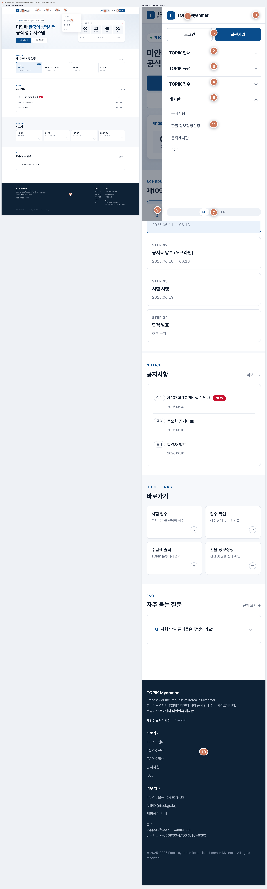
사용 흐름 (시나리오)
- 페이지를 열면 상단 메뉴·하단 푸터·모바일 탭바가 자동으로 표시됩니다.
- 로그인한 상태라면 오른쪽에 내 이름과 로그아웃 버튼이 보이고, 로그인하지 않았다면 로그인·회원가입 버튼이 보입니다.
- 시험 접수·접수 확인·환불·정정·문의처럼 로그인이 필요한 메뉴를 누르면 먼저 로그인 화면으로 이동합니다.
요소별 상세
| 번호 | 요소 | 무엇 / 동작 / 결과 |
|---|---|---|
| 1 | 로고 | TOPIK Myanmar 로고. 클릭하면 홈으로 이동합니다. |
| 2 | TOPIK 안내 | 마우스를 올리거나 탭하면 시험 개요·소개·문항 구성·평가 기준 메뉴가 펼쳐집니다. |
| 3 | TOPIK 규정 메뉴 | 드롭다운: 유의 사항·답안 작성 요령·응시료 규정·신분증 규정. |
| 4 | TOPIK 접수 메뉴 | 드롭다운: 접수 방법·시험 접수(로그인)·접수 확인(로그인)·수험표 출력. |
| 5 | 게시판 메뉴 | 드롭다운: 공지사항·환불·정보정정신청(로그인)·문의게시판(로그인)·FAQ. |
| 6 | 로그인·회원가입 | 로그인 전: 로그인·회원가입 버튼. 로그인 후: 내 이름(클릭 시 마이페이지) + 로그아웃. |
| 7 | 언어 전환 (KO/MY/EN) | 버튼을 누르면 바로 해당 언어로 화면이 바뀝니다. |
| 8 | 햄버거 메뉴 (≤768px) | 우측 슬라이드 드로어. 4대 메뉴 아코디언 + 로그인/마이 + 언어 토글. ESC·배경 클릭·닫기(✕) 로 닫힘, 열린 동안 본문 스크롤 잠금. |
| 9 | 하단 탭바 (모바일) | 홈·접수·게시판·마이 4탭 자동 생성. 현재 페이지에 맞춰 활성 탭 표시(예: 마이페이지·로그인은 "마이"). |
| 10 | 푸터 | 운영기관 안내, 바로가기, TOPIK·NIIED 등 외부 링크, 문의 이메일, 업무시간(월–금 09:00–17:00, 미얀마 시간). |
| 11 | 로그인 필요 페이지 | 시험 접수·접수 확인·환불·정정·문의는 로그인 후 이용합니다. |
메인 홈 (`index.html`)
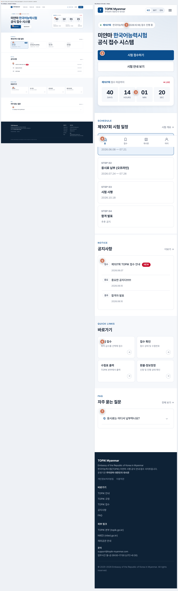
홈 화면에는 현재 회차 정보, 접수 마감까지 남은 시간, 시험 일정, 최신 공지, 자주 묻는 질문 요약이 표시됩니다.
요소별 상세
- 1) 회차 배지 (
#heroRoundBadge) — 현재/다음 회차 + 시험일을 표시합니다. 상태에 따라 모양이 바뀝니다: 접수 전 = "제N회 …(시험일)", 접수 중 = "… 접수 진행 중"(초록 점 깜빡임), 마감 = "접수 마감"(회색). 접수 중인 회차가 우선 표시되고, 없으면 가장 가까운 예정 회차가 표시됩니다. - 2) 주요 버튼 — 시험 접수하기, 시험 안내 보기. PC는 가로, 모바일은 세로로 배치됩니다.
- 3) D-Day 카운트다운 (
#ddayGrid:dd-d/h/m/s) — 접수 마감 시각까지 남은 일/시/분/초를 1초마다 갱신. 0이 되면 "접수가 마감되었습니다 + 다음 회차 일정 보기" 안내로 자동 전환. 하단 메타(접수기간/응시료 납부/시험일)는 모바일에서 숨김. - 4) 일정 타임라인 (
#examTimeline) — 4단계 카드: 원서 접수 → 응시료 납부(오프라인) → 시험 시행 → 합격 발표(추후 공지). 현재 진행 중 단계는진행중, 지난 단계는종료배지(MMT 기준). - 5) 공지 미리보기 (
#homeNoticeList) — 최신 공지 최대 5건. 각 행 = 카테고리 배지 + 제목(고정글은NEW) + 날짜. 행을 클릭하면 공지 상세로 이동합니다. - 6) 바로가기 카드 — 시험 접수 / 접수 확인 / 수험표 출력 / 환불·정보정정.
- 7) FAQ 아코디언 (
#homeFaqAccordion) — FAQ 상위 3건 요약. 질문 클릭 시 답변 펼침. 전체 FAQ는 FAQ 메뉴에서 볼 수 있습니다.
TOPIK 안내 · 시험 개요 (`guide-overview.html`)
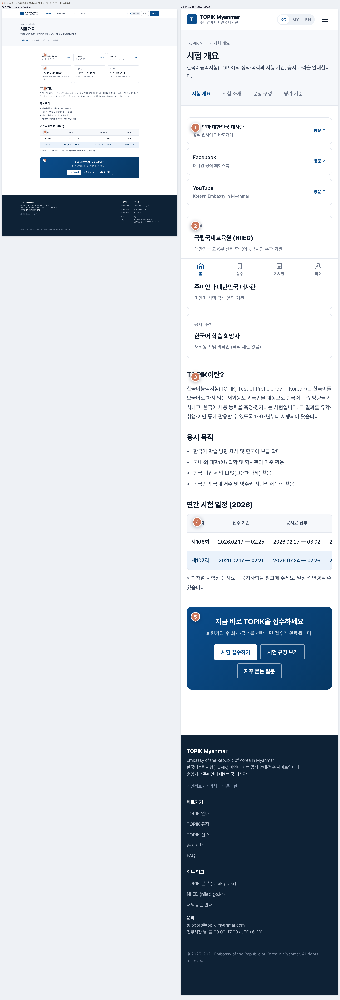
| 번호 | 요소 | 무엇 / 동작 |
|---|---|---|
| 1 | 외부 링크 3종 | 주미얀마 대한민국 대사관·Facebook·YouTube (새 탭). |
| 2 | 핵심 요약 카드 | 주관(국립국제교육원 NIIED) / 시행 기관(주미얀마 대한민국 대사관) / 응시 자격(국적 제한 없음). |
| 3 | 본문 | "TOPIK이란?"(1997년~ 시행 목적), 응시 목적 4가지. |
| 4 | 연간 시험 일정 표 | 등록된 시험 회차 일정이 표로 표시됩니다. 현재 접수 중인 회차는 표에서 강조 표시됩니다. 시각은 미얀마(UTC+6:30) 기준 표시. |
| 5 | CTA 블록 | 시험 접수하기 / 시험 규정 보기 / 자주 묻는 질문. |
TOPIK 안내 · 시험 소개 (`guide-intro.html`)
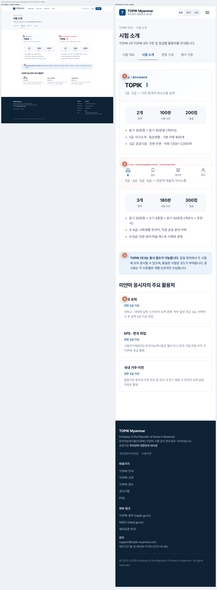
정적 안내 페이지. TOPIK Ⅰ/Ⅱ의 차이와 등급별 활용처를 카드로 설명합니다.
| 번호 | 요소 | 내용 |
|---|---|---|
| 1 | TOPIK Ⅰ 카드 | 초급(1·2급) · 2개 영역 · 100분 · 200점. 듣기 30 + 읽기 40(객관식). 급수별 어휘 안내. |
| 2 | TOPIK Ⅱ 카드 | 중·고급(3~6급) · 3개 영역 · 180분 · 300점. 듣기 50 + 쓰기 4 + 읽기 50(객관식+주관식). |
| 3 | 동시 접수 안내 콜아웃 | Ⅰ·Ⅱ 동시 접수 가능, 동일 시험장 코드, 응시료는 수준별 개별 오프라인 수납. |
| 4 | 활용처 카드 3종 | 한국 유학(권장 3급+) / EPS·취업(권장 2급+) / 거주·이민(권장 3급+). |
TOPIK 안내 · 문항 구성 (`guide-questions.html`)
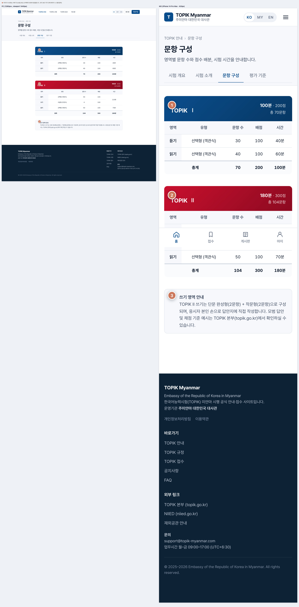
정적 표 페이지. 영역별 문항 수·배점·시간을 정리합니다.
| 시험 | 영역 (유형) | 문항 | 배점 | 시간 |
|---|---|---|---|---|
| TOPIK Ⅰ | 듣기 (객관식) | 30 | 100 | 40분 |
| 읽기 (객관식) | 40 | 100 | 60분 | |
| 총계 | 70 | 200 | 100분 | |
| TOPIK Ⅱ | 듣기 (객관식) | 50 | 100 | 110분(듣기+쓰기) |
| 쓰기 (주관식) | 4 | 100 | ||
| 읽기 (객관식) | 50 | 100 | 70분 | |
| 총계 | 104 | 300 | 180분 |
- 쓰기 안내 콜아웃: TOPIK Ⅱ 쓰기 = 단문 완성형 2 + 작문형 2, 응시자 본인 손으로 답안지에 직접 작성. 모범 답안·채점 기준은
topik.go.kr.
TOPIK 안내 · 평가 기준 (`guide-evaluation.html`)
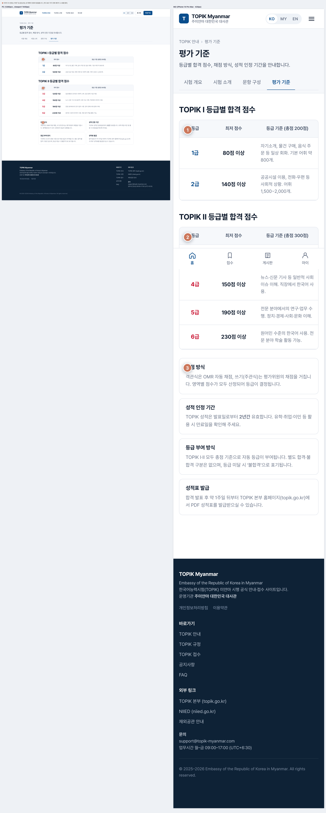
정적 표 페이지. 등급별 합격 점수와 채점·인정 기준을 안내합니다.
| 시험 | 등급 | 최저 점수 |
|---|---|---|
| TOPIK Ⅰ (200점) | 1급 / 2급 | 80점 이상 / 140점 이상 |
| TOPIK Ⅱ (300점) | 3급 / 4급 / 5급 / 6급 | 120 / 150 / 190 / 230점 이상 |
- 추가 정보 카드 4종: 채점 방식(객관식 OMR 자동, 쓰기 평가위원 채점) · 성적 인정 기간(발표일로부터 2년) · 등급 부여 방식(총점 기준 자동, 미달 시 '불합격') · 성적표 발급(발표 약 1주 후
topik.go.krPDF).
TOPIK 규정 · 유의 사항 (`rules-notice.html`)
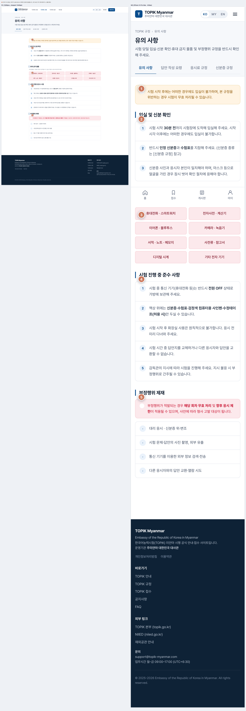
정적 규정 페이지. 시험 당일 입실·금지 물품·진행 준수·부정행위 제재를 정리합니다.
| 번호 | 블록 | 핵심 내용 |
|---|---|---|
| 1 | 상단 경고 | 시험 시작 후 입실 불가, 규정 위반 시 무효 처리 가능. |
| 2 | 입실 및 신분 확인 | 시작 30분 전 도착, 인정 신분증+수험표 지참, 사진·본인 일치 확인(마스크 잠시 벗기). |
| 3 | 휴대 금지 물품 | 휴대전화·스마트워치, 전자사전·계산기, 이어폰·블루투스, 카메라·녹음기, 서적·노트·메모지, 사전류·참고서, 디지털 시계, 기타 전자기기. |
| 4 | 진행 중 준수 사항 | 통신기기 전원 OFF·가방 보관, 책상 위 허용물(신분증·수험표·검정 사인펜·수정테이프), 화장실 사용 불가 원칙, 답안 교체·교환 금지, 감독관 지시 준수. |
| 5 | 부정행위 제재 | 회차 무효·향후 응시 제한·형사 고발 가능. (대리응시·신분증 위변조·문제/답안 촬영 유출·외부 정보 검색·답안 교환) |
TOPIK 규정 · 답안 작성 요령 (`rules-answer.html`)
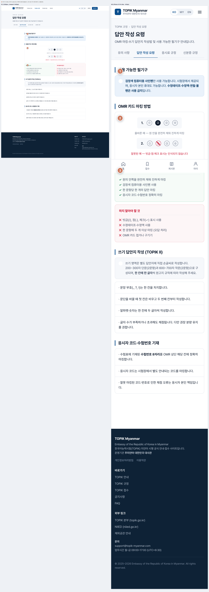
정적 규정 페이지. OMR 마킹·쓰기 답안 작성법과 필기구 규정을 안내합니다.
| 번호 | 블록 | 핵심 내용 |
|---|---|---|
| 1 | 사용 가능한 필기구 | 검정색 컴퓨터용 사인펜만 사용(시험장 제공·본인 휴대 가능). 수정테이프·수정액·연필·볼펜 금지. |
| 2 | OMR 카드 마킹 | 올바른 예(원 안을 완전히 진하게) vs 잘못된 예(빗금·점·반칸) 일러스트로 비교. |
| 3 | 해야 할 것 / 하지 말 것 | Do/Don't 2열 표로 정답 마킹·정정 방법·답안지 훼손 금지 등 안내. |
TOPIK 규정 · 응시료 규정 (`rules-fee.html`)
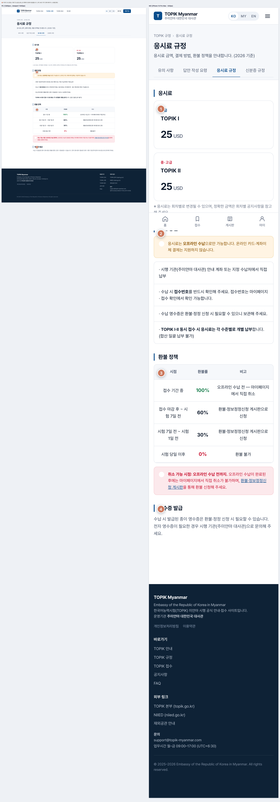
정적 규정 페이지(2026 기준). 금액·결제·환불 정책을 안내합니다.
- 1) 응시료: TOPIK Ⅰ = $25 USD, TOPIK Ⅱ = $25 USD. (회차별 변경 가능 — 정확 금액은 회차 공지·접수 화면의 실제 표시값 우선)
- 2) 결제 방법: 오프라인 수납만 (온라인 카드·계좌이체 미지원). 지정 계좌/수납처에서 직접 납부, 수납 시 접수번호 확인, 영수증 보관, Ⅰ·Ⅱ 동시 접수 시 수준별 개별 납부.
- 3) 환불 정책 표:
| 시점 | 환불률 | 비고 |
|---|---|---|
| 접수 기간 중 | 100% | 오프라인 수납 전 — 마이페이지에서 직접 취소 |
| 접수 마감 후 ~ 시험 7일 전 | 60% | 환불·정보정정신청 게시판으로 신청 |
| 시험 7일 전 ~ 1일 전 | 30% | 환불·정보정정신청 게시판으로 신청 |
| 시험 당일 이후 | 0% | 환불 불가 |
- 4) 영수증 발급: 종이 영수증은 환불·정정 신청 시 필요할 수 있음. 전자 영수증은 시행 기관 문의.
취소 가능 시점은 오프라인 수납 전까지 — 수납 후에는 마이페이지 직접 취소가 막히고 환불·정보정정신청 게시판으로만 신청 가능합니다.
TOPIK 규정 · 신분증 규정 (`rules-id.html`)
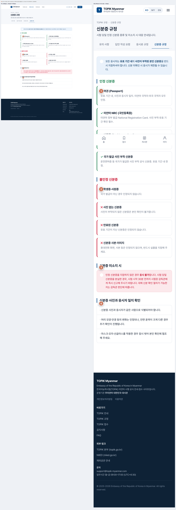
정적 규정 페이지. 시험 당일 인정/불인정 신분증과 미소지 시 대응을 안내합니다.
| 구분 | 내용 |
|---|---|
| 인정 | 여권(Passport) / 미얀마 NRC(국민등록증) / 거주증(미얀마 발급) / 국가 발급 사진 부착 신분증(운전면허증 등). 모두 유효기간 내 + 사진 부착 + 본인 일치. |
| 불인정 | 학생증·사원증(국가 발급 아님) / 사진 없는 신분증 / 만료된 신분증 / 사본·휴대폰 화면 이미지. |
| 미소지 시 | 인정 신분증 없으면 응시 불가. 당일 분실 시 시작 30분 전까지 감독관에 즉시 신고, 대체 확인 가능 여부는 감독관 판단. |
| 사진 일치 확인 | 머리·안경 변화는 인정, 안면 윤곽이 크게 다르면 추가 확인. 마스크·모자·선글라스는 잠시 벗기. |
TOPIK 접수 · 접수 방법 (`apply-howto.html`)
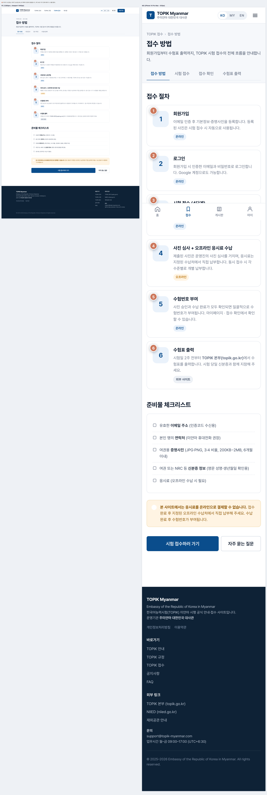
정적 안내 페이지. 회원가입부터 수험표 출력까지 전체 흐름을 6단계로 설명합니다.
| 번호 | 단계 | 채널 | 내용 |
|---|---|---|---|
| 1 | 회원가입 | 온라인 | 이메일 인증 + 기본정보·증명사진 등록 (사진은 접수 시 자동 사용). |
| 2 | 로그인 | 온라인 | 이메일+비밀번호 또는 Google 계정. |
| 3 | 시험 접수 (4단계) | 온라인 | 회차·급수 → 회원정보 확인 → 사진 규격 확인 → 최종 제출. Ⅰ·Ⅱ 동시 가능. |
| 4 | 사진 심사 + 응시료 수납 | 오프라인 | 운영진 사진 심사 + 지정 수납처 직접 납부 (동시 접수 시 수준별 개별). |
| 5 | 수험번호 부여 | 온라인 | 사진 승인 + 수납 완료 확인 시 일괄 부여 → 마이페이지에서 확인. |
| 6 | 수험표 출력 | 외부 | 시험 2주 전부터 topik.go.kr에서 출력, 당일 신분증과 지참. |
- 준비물 체크리스트: 유효 이메일 / 본인 연락처(미얀마 휴대전화 권장) / 여권용 증명사진(JPG·PNG, 3:4, 200KB~2MB, 6개월 이내) / 신분증 정보(여권·NRC) / 응시료(오프라인).
- 경고 콜아웃: 본 사이트는 응시료 온라인 결제 불가 → 오프라인 수납 후 수험번호 부여.
TOPIK 접수 · 시험 접수 (4단계) (`register.html`)

로그인 필수 — 이용 전 로그인해 주세요.
4단계로 나뉜 접수 화면입니다. 상단 단계 표시에서 완료한 단계를 클릭하면, 각 패널의 다음(data-next)·이전(data-back) 버튼으로 이동합니다.
사용 흐름 (시나리오)
- STEP1 회차·급수 — 접수 가능한 회차 라디오 선택 → 시험장 선택 → TOPIK Ⅰ/Ⅱ 체크(복수 가능) →
다음. - STEP2 회원정보 확인 — 가입 시 등록한 내 정보가 읽기 전용으로 표시. 수정은 내정보 수정에서.
- STEP3 사진 규격 확인 — 가입 시 등록한 증명사진 미리보기 + 5개 규격 체크리스트 전부 체크해야
다음활성화. - STEP4 최종 확인 — 요약 확인 + 약관 동의 →
접수하기→ 완료 모달 → 마이페이지. - 어느 단계에서든
저장 후 나가기로 임시저장 가능. 다음 진입 시 이어쓰기 여부를 묻습니다.
STEP별 핵심 동작
| 단계 | data-s | 주요 동작 |
|---|---|---|
| 1 | 1 | roundList 회차 라디오 → venueSelect 시험장 → lvl1/lvl2 급수(복수) → 검증 후 다음 |
| 2 | 2 | profileGrid에 프로필 읽기전용 표시(수정 불가, 링크 제공) |
| 3 | 3 | photo-frame 증명사진 미리보기 + photo-checks 5항목 전체 체크 시 btnGoStep4 활성 |
| 4 | 4 | sumRound/sumLevels/sumVenue/sumFee 요약 + agreeTerms 동의 → btnSubmit 제출 |
요소별 상세
- 1) 단계 인디케이터 (
#registerSteps) — ①회차·급수 ②회원정보 확인 ③사진 규격 확인 ④최종 확인. 완료 단계 클릭 시 해당 단계로 점프(모바일은 활성 탭을 화면 중앙으로 스크롤). - 2) 저장 후 나가기 — 입력 중인 내용을 임시 저장하고 마이페이지로 나갈 수 있습니다. 저장된 내용은 30일간 보관되며, 다음에 접수 화면에 들어오면 이어서 작성할지 묻습니다.
- 3) 회차 목록 (
#roundList) —open·scheduled회차만 카드로 노출. 카드에 제N회/제목, 상태 배지(접수 중/접수 마감/예정/접수 예정), 시험일, 접수 기간. 접수 중이 아닌 회차는 비활성(선택 불가). 라디오 단일 선택. - 4) 시험장 (
#venueSelect) — 시험장 목록 드롭다운. 시험장이 1개면 자동 선택. 잠금 케이스: ⓐ재접수, ⓑ같은 회차에 진행 중 급수가 있을 때 → 기존 시험장으로 고정(드롭다운 비활성 +venueLockNote안내). 다른 시험장을 선택할 수 없을 때는 안내 문구가 표시됩니다. - 5) 급수 체크박스 (
lvl1/lvl2) — TOPIK Ⅰ·Ⅱ 복수 선택. 잠금: 선택 회차에 이미 진행 중인 급수는 비활성 + 사유 노트(사진 심사중/수납 대기/접수 진행중). 재접수 모드에서는 반려·취소된 급수만 선택 가능(진행 중 급수 선택 시 경고). - 6) 응시료 표시 (
feeLvl1/feeLvl2) — 선택 회차의 회차별 응시료로 각 급수 응시료 표시. 동시 선택 시 STEP4 합계에 합산. - 7) 회원정보 그리드 (STEP2) — 한글·영문 성명, 생년월일, 성별, 국적, 제1언어, 연락처, 이메일, 직업·응시동기·응시목적이 표시됩니다. 이 화면에서는 수정할 수 없으며, 변경이 필요하면 내정보 수정 메뉴를 이용하세요.
- 8) 사진 프레임 (
.photo-frame, STEP3) — 가입 사진을 인증된 이미지로 표시(없으면 더미). 이 단계에서 업로드·교체 불가 — 교체는 내정보 수정에서. - 9) 규격 체크리스트 (
.photo-checks, STEP3) — 5항목: 여권용 정면 컬러(JPG)·흰색 배경 / 최근 6개월 이내 / 흑백·흐릿 아님 / 모자·선글라스·이어폰·앞머리로 얼굴 안 가림 / 정면·본인. 전부 체크해야btnGoStep4(다음) 활성. - 10) 최종 요약 (STEP4) —
sumRound(회차+시험일),sumLevels(급수, 2개면 "동시 접수"),sumVenue, 성명·생년월일·연락처·이메일,sumFee(합계). 응시료/환불 안내 콜아웃 동반. - 11) 약관 동의 (
#agreeTerms) —[필수]체크. 미체크 시 제출 차단(알림). 제출 시 서비스·개인정보 약관 동의 이력이terms_agreed로 전송됨. - 12) 제출 — 접수하기 버튼을 누르면 접수가 완료됩니다. 완료 안내 창이 뜨고, 접수확인을 누르면 마이페이지로 이동합니다.
자주 보는 안내 메시지
| 상황 | 동작 / 메시지 |
|---|---|
| 급수 미선택 | "응시 급수를 1개 이상 선택해 주세요." |
| 사진 체크리스트 미완료 | STEP3에서 다음 비활성 / 서버 photo_checklist_confirmed 누락 시 검증 오류 |
| 접수 불가 회차 | ROUND_NOT_OPEN (400) — "접수 가능한 회차가 아닙니다." |
| 동일 회차·급수 중복 | ALREADY_SUBMITTED (409) — "이미 …접수 진행 중입니다." |
| 잠긴 시험장 위반 | 400 — "다른 급수가 진행 중일 때는 기존 시험장으로만 접수할 수 있습니다." |
| 잘못된 시험장 | INVALID_VENUE (400) |
| 로그인 만료 | 401 → "로그인이 만료되었습니다." → login.html?next=register.html |
재접수 진입
마이페이지에서 재접수 클릭 시 register.html?reapply=1&exam_round_id=…&level=…&application_id=…로 진입. 재접수 모드는 임시저장 복원을 건너뛰고, 반려·취소된 급수만 다시 선택해 제출합니다.
TOPIK 접수 · 접수 확인 (`mypage.html`)
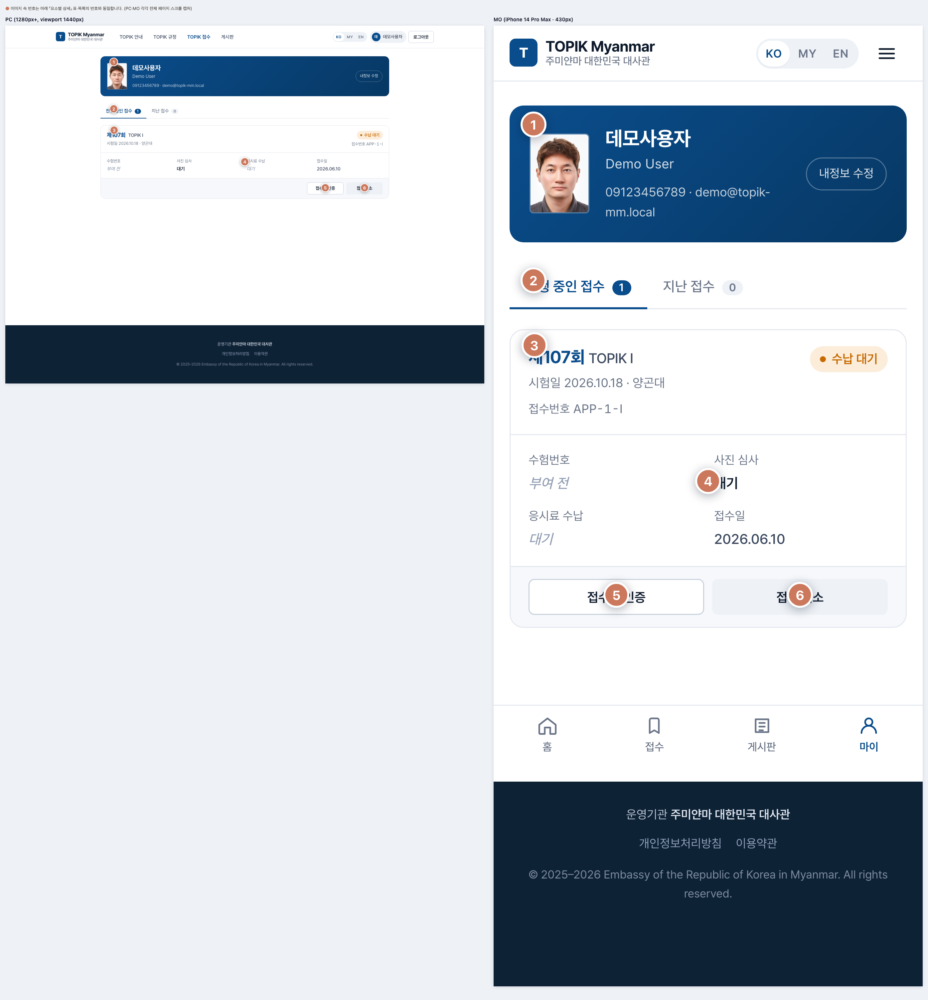
로그인 필수.
내 접수 현황을 급수 단위 카드로 보여주고, 상태별로 가능한 액션(확인증·수험표·취소·재접수·사유보기)을 제공합니다.
사용 흐름 (시나리오)
- 접수 확인 화면에 들어오면 접수 목록을 받아 진행 중 / 지난 탭으로 분리.
- 각 카드의 상태 배지로 현재 단계를 확인하고, 하단 액션 버튼으로 확인증 인쇄·취소·재접수 등을 수행.
- 접수 취소를 누르면 확인 창이 뜨고, 확인하면 취소되며 목록이 갱신됩니다.
상태 배지 의미 (fo_card_status)
| 값 | 배지 라벨 | 의미 |
|---|---|---|
applied | 접수 완료 | 제출됨, 사진 심사 대기 |
photo | 사진 심사중 | 운영진 사진 심사 진행 |
pay | 수납 대기 | 사진 승인 후 응시료 미납 |
approved | 수납 완료 | 납부 완료, 채번 대기 |
number | 수험번호 부여 | 수험번호 부여(공개일 게이팅) |
photo_rejected | 사진 반려 | 사진 재등록 필요 |
app_rejected | 반려 | 접수 반려 → 재접수 필요 |
cancelled | 접수 취소 | 취소됨(지난 접수 탭) |
요소별 상세
- 1) 프로필 카드 (
#meCard) — 아바타(증명사진), 한글 이름(meNameKo)·영문 이름(meNameEn), 메타(연락처 · 이메일).내정보 수정링크. - 2) 탭 (
진행 중인 접수/지난 접수) — 각 탭 옆 카운트 배지(ctActive/ctPast). 취소·완료 건은 지난 접수로 이동. - 3) 접수 카드 — 상단: 회차 + 급수 + 상태 배지 + 접수번호. 본문 4칸 그리드: 수험번호 / 사진 심사 / 응시료 수납 / 접수일.
- 수험번호: 미부여 시 "부여 전", 부여됐으나 공개일 전이면 "공개 예정 (날짜)", 공개 후 실제 번호 표시.
- 사진 심사: 대기 / 심사 중 / 승인 완료 / 반려(반려 코드 표기 — 정면 아님·모자·안경·흑백·흐림·본인 아님 등).
- 응시료 수납: 대기 / 완료 / 환불.
- 4) 접수 확인증 (
modalConfirm) —접수 확인증버튼 → 인쇄용 표(회차·접수번호·수험번호·급수·응시료·접수일·응시자·생년월일·수납 상태).인쇄버튼은 해당 모달만 인쇄(printing-confirm). - 5) 반려 사유 (
modalReason) — 사진/접수 반려 카드의사유보기버튼 → 반려 코드+메모 표시. - 6) 접수 취소 (
modalCancel+#btnConfirmCancel) — 수납 전(applied/photo/pay)·미반려 건에만 노출. 확인 시 . - 7) 재접수 링크 — 반려 건에 노출 →
register.html?reapply=1&exam_round_id=…&level=…&application_id=….
액션 노출 규칙 / 에러
| 상태 | 노출 버튼 |
|---|---|
| applied·photo·pay | 접수 확인증 · 접수 취소 |
| approved | 접수 확인증 |
| number | 접수 확인증 · 수험표 출력 |
| photo_rejected | 사진 재등록 · 사유보기 |
| app_rejected | 재접수 · 사유보기 |
- 취소 불가: 이미 취소되었거나 수납이 완료된 접수는 마이페이지에서 직접 취소할 수 없습니다. 환불이 필요하면 환불·정보정정신청 게시판을 이용하세요.
- 한 회차에 여러 급수가 있을 때 급수 단위 취소가 가능하며, 모든 급수가 취소되면 접수 건 전체가 취소 처리됩니다.
TOPIK 접수 · 수험표 출력 (`ticket.html`)
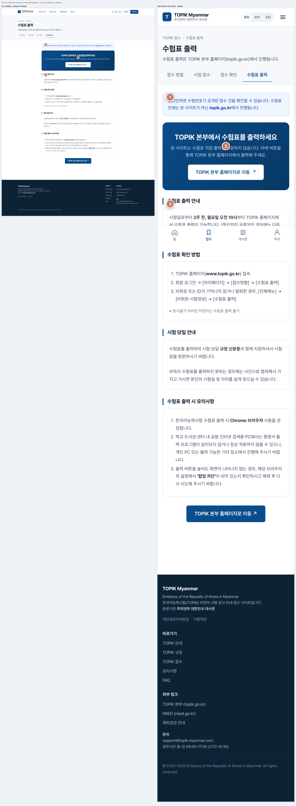
로그인 없이도 안내 내용을 볼 수 있습니다. 수험번호 확인은 로그인 후 가능합니다.
수험표는 topik.go.kr(TOPIK 본부 사이트)에서 출력합니다. 아래 안내를 따라 주세요.
요소별 상세
- 1) 상태 영역 (
#ticketStatus) — 로그인 상태/접수 상태에 따라 동적 배너:- 비로그인: "로그인하면 수험번호 공개 여부를 확인" 안내(로그인 링크).
- 수험번호 공개됨: 회차별 카드 + 급수별 수험번호 +
TOPIK 본부에서 수험표 출력 ↗버튼. (마이페이지에서 넘어오면 해당 건 강조) - 부여됐으나 공개 전: "아직 공개일 전" 경고 배너.
- 대상 없음/진행 중만 있음: 안내 배너 + 접수/확인 링크.
- 2) topik.go.kr 안내 (
#heroTopikLink) — 본부 사이트로 이동 버튼. - 3) 안내 블록 4종 — 출력 시점(시험 2주 전 월요일 10시~), 확인 방법(로그인→마이페이지→접수현황→수험표), 시험 당일(수험표+신분증 지참), 출력 유의사항(Chrome 권장·팝업 차단 해제 등).
게시판 · 공지사항 (SPA) (`notice.html`)
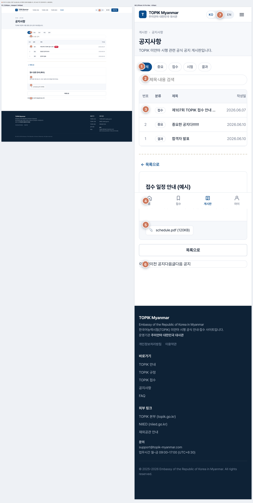
한 페이지에서 목록(#listView)과 상세(#detailView)를 토글하는 SPA입니다. notice.html?id=N 딥링크로 상세 직진 가능.
뷰 구성
| 뷰 | DOM | 설명 |
|---|---|---|
| 목록 | #listView | 카테고리 칩 + 검색 + #noticeTbody(번호·분류·제목·작성일) |
| 상세 | #detailView | #noticeDetailTitle·#noticeDetailMeta·#noticeDetailBody·첨부·#noticeNavPn |
요소별 상세
- 1) 카테고리 칩 — 전체 / 중요 / 접수 / 시험 / 결과. 클릭 시
category로 재조회(중요→important/imp, 접수→apply/registration별칭 흡수). - 2) 검색 — 입력 300ms 디바운스 후
q로 재조회. 제목을 기준으로 검색합니다. 결과 없으면 "검색 조건에 맞는 공지가 없습니다." 표시. - 3) 목록 행 (
#noticeTbody) — 고정 공지는 번호 대신—+NEW배지. 행 클릭 → 상세. 노출 기간(display_start/end)·게시 상태(is_published)에 맞는 공지만 표시. - 4) 상세 본문 (
#noticeDetailBody) — 관리자가 작성한 내용이 표시됩니다. 외부 링크는 새 탭에서 열립니다. 상세 조회 시 조회수 1 증가. - 5) 첨부 (
#noticeDetailAttach) — 파일명+크기, 다운로드 링크(/api/v1/files/{id}). - 6) 이전글/다음글 (
#noticeNavPn) — 목록과 동일 정렬(고정↓·게시일↓·id↓) 기준 prev/next. 클릭 시 해당 글 상세로 이동. - 7) 언어 전환 — KO/MY/EN 변경 시 목록 + 상세를 재조회(
getNotice+lang)해 다국어 제목·본문 반영. URL은history.replaceState로?id=동기화/복원.
게시판 · FAQ (`faq.html`)
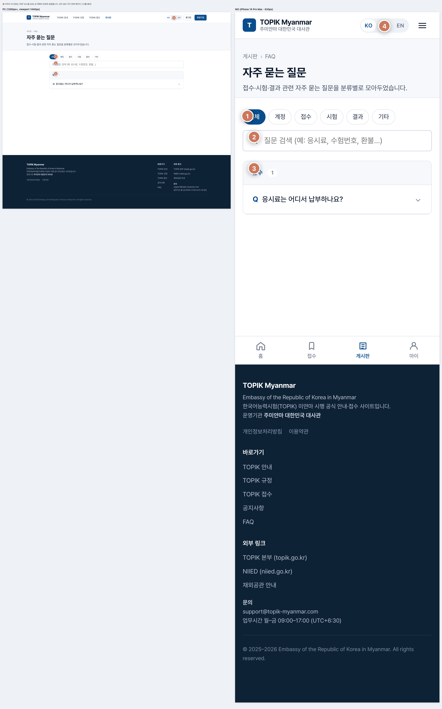
카테고리별로 묶인 자주 묻는 질문 아코디언.
| 번호 | 요소 | 동작 |
|---|---|---|
| 1 | 카테고리 칩 | 전체 / 계정 / 접수 / 시험 / 결과 / 기타. 카테고리를 누르면 해당 분류만 표시됩니다. |
| 2 | 검색 | 질문과 답변에서 검색합니다. 일치 항목은 자동으로 펼쳐집니다. |
| 3 | 아코디언 그룹 | 카테고리별 그룹 헤더(건수 배지) + 질문 클릭 시 답변 펼침(details). |
| 4 | 언어 전환 | KO/MY/EN 변경 시 로 재조회해 다국어 질문·답변 반영. |
게시판 · 문의게시판 (SPA) (`qna.html`)
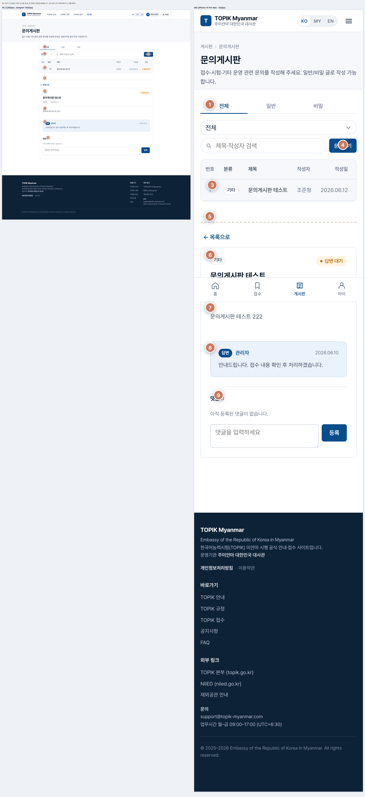
로그인 필수.
한 페이지에서 목록, 글쓰기, 상세 보기 세 화면을 전환하며 이용합니다.
사용 흐름 (비밀글 문의 시나리오)
문의하기→ 작성 패널. 카테고리·공개 범위 선택. 비밀을 고르면 비밀번호 입력칸이 나타남(4자 이상).- 제목(≤100자)·내용(≥10자)·첨부(jpg/png/pdf ≤5MB, 최대 3개) 입력 후 제출합니다.
- 목록에서 내 비밀글은 자물쇠 아이콘과 함께 보이며, 로그인 작성자 본인이면 클릭 시 본문 열람. 타인의 비밀글을 클릭하면 "작성자·관리자만 열람" 안내 창이 표시됩니다. 비밀글은 작성자와 관리자만 볼 수 있습니다.
입력 필드 (작성 패널)
| 필드 | 필수 | 형식·제약 | 예시 |
|---|---|---|---|
카테고리 (#qnaCategory) | ● | 접수 / 시험 / 기타 | 접수 |
공개 범위 (visNormal/visSecret) | ● | 일반(누구나) / 비밀(작성자·관리자만) | 비밀 |
비밀글 비밀번호 (#qnaSecretPw) | 비밀 선택 시 ● | 4자 이상 (비밀글일 때만 노출) | 1234 |
제목 (#qnaTitle) | ● | 1~100자 | 응시료 수납 문의 |
내용 (#qnaBody) | ● | 10자 이상 | … |
첨부 (#qnaFileInput) | ○ | jpg/png/pdf, ≤5MB, 최대 3개 (선택 즉시 업로드) | receipt.jpg |
게시글 상태 배지 (workflow_status)
| 값 | 라벨 |
|---|---|
| received | 접수 |
| in_review | 처리중 |
| awaiting_reply | 답변 대기 |
| answered | 답변 완료 |
| completed | 완료 |
| rejected | 반려 |
요소별 상세
- 1) 목록 뷰 (
#qnaListBody) — 번호·분류·제목·작성자·작성일·상태. 탭(전체/일반/비밀)·카테고리·검색으로 목록을 좁힐 수 있습니다. 페이지네이션(#qnaPager)은 서버 페이지(20건/페이지). 내 글 작성자는 "본인", 관리자 답변자는 "관리자"로만 표기. - 2) 작성 폼 (
#writePane) — 위 입력 필드 표 참조. 첨부는 선택 즉시 업로드되고 칩으로 상태(업로드 중/✓/실패) 표시. 업로드 진행 중 제출 시 대기 안내. - 3) 상세 뷰 (
#detailPane) — 제목·메타(작성자·날짜·비밀 표시)·본문(#bdBody)·첨부 다운로드·관리자 답변 이력(#bdReply, 최신순)·댓글(#bdComments). - 4) 본인 글 수정·삭제 — 관리자 답변이 등록되기 전에만 수정·삭제 버튼이 보입니다. 답변 후에는 수정·삭제할 수 없습니다.
- 5) 비밀글 안내 — 다른 사람의 비밀글을 클릭하면 "비밀글입니다. 작성자·관리자만 열람할 수 있습니다." 안내 창이 표시됩니다. 비밀글은 작성자와 관리자만 본문을 볼 수 있습니다.
- 6) 댓글·대댓글 — 로그인 사용자만 작성(
POST .../comments).답글로 대댓글(스레드) 작성. 관리자 작성 댓글은 실명 대신 "관리자"로 표시.
검증·에러
| 상황 | 메시지 |
|---|---|
| 제목 길이 | "제목을 100자 이내로 입력해 주세요." |
| 내용 길이 | "내용을 10자 이상 입력해 주세요." |
| 비밀글 비번 | "비밀글 비밀번호를 4자 이상 입력해 주세요." |
| 첨부 형식/크기 | "jpg, png, pdf 형식만…" / "파일 크기는 5MB 이하…" |
| 첨부 개수 | "첨부파일은 최대 3개까지 가능합니다." |
| 비로그인 | login.html?next=qna.html로 이동 |
게시판 · 환불·정보정정 (SPA) (`refund-correction.html`)
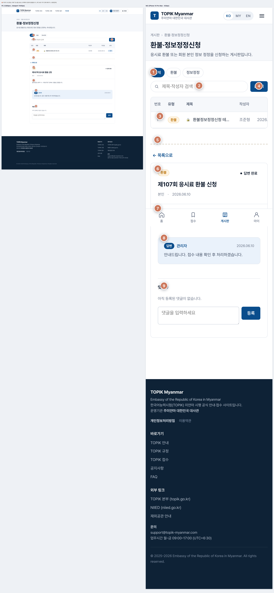
로그인 필수.
문의게시판과 같은 방식으로 이용하되, 모든 글이 비밀글로 등록되며 유형(환불/정보정정)을 분류로 사용합니다.
사용 흐름 (시나리오)
글쓰기→ 유형(환불/정보정정) 선택 → 제목·내용 → 비밀번호(4자 이상, 필수) → 첨부(영수증·신분증 사본 등) → 개인정보 처리 동의 체크 →제출.- 모든 글은 비밀글이므로 작성자 본인과 관리자만 본문을 볼 수 있습니다. 다른 사람의 글을 클릭하면 안내 창만 표시됩니다.
입력 필드 (작성 패널)
| 필드 | 필수 | 형식·제약 | 예시 |
|---|---|---|---|
유형 (name=type) | ● | 환불 / 정보정정 (라디오 → 분류) | 환불 |
제목 (#rfdTitle) | ● | 1~100자 | 제107회 응시료 환불 |
내용 (#rfdBody) | ● | 10자 이상 (사유·접수번호·회차 등) | … |
비밀번호 (#rfdSecretPw) | ● | 4자 이상 (모든 글 비밀) | 1234 |
첨부 (#rfdFileInput) | ○ | jpg/png/pdf, ≤5MB, 최대 5개 | receipt.pdf |
개인정보 동의 (#rfdAgree) | ● | 미체크 시 제출 차단(알림) | ✔ |
요소별 상세
- 1) 유형 칩 — 전체 / 환불 / 정보정정. 유형별로 목록을 필터할 수 있습니다.
- 2) 목록 (
#rfdListBody) + 페이지네이션 (#rfdPager) — 번호·유형 배지·제목·작성자·작성일·상태. - 3) 작성 폼 (
#writePane) — 위 표 참조.🔒 모든 신청 글은 비밀글로 등록안내 고정. - 4) 상세 (
#detailPane) — 본문·관리자 답변 이력(#bdReply)·댓글. 본인 글 수정·삭제는 관리자 답변 전까지.
계정 · 로그인 (`login.html`)
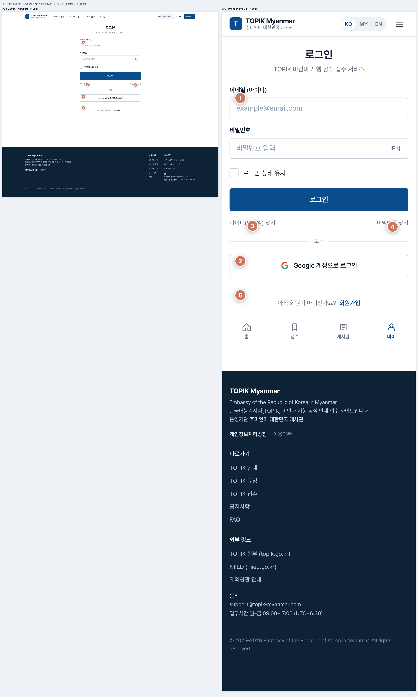
사용 흐름 (시나리오)
- 이메일+비밀번호 입력 →
로그인.로그인 상태 유지를 체크하면 브라우저를 닫아도 로그인이 유지되며, 최대 14일까지 자동 로그인됩니다. 체크하지 않으면 탭·브라우저를 모두 닫았을 때 다시 로그인해야 합니다(공용 PC에서는 체크하지 않는 것을 권장). - 로그인에 성공하면, 로그인 전에 가려던 페이지가 있으면 그곳으로, 없으면 홈으로 이동합니다.
- 비밀번호를 6개월 이상 변경하지 않았다면, 먼저 변경을 권하는 안내 창이 뜹니다(나중에 / 변경 선택).
입력 필드
| 필드 | 필수 | 형식·제약 |
|---|---|---|
이메일 (#email) | ● | 이메일 형식(= 로그인 아이디) |
비밀번호 (#password) | ● | 표시/숨김 토글 제공 |
로그인 상태 유지 (#remember) | ○ | 체크 시 브라우저를 닫아도 유지(최대 14일). 미체크 시 탭·브라우저 종료 시 재로그인 |
모달
| 기능 | 설명 |
|---|---|
| 아이디(이메일) 찾기 | 이름·생년월일·연락처를 입력하면 가입 이메일 일부가 안내됩니다. |
| 비밀번호 찾기 | 이메일로 인증코드를 받은 뒤 비밀번호 재설정 화면으로 이동합니다. |
| 비밀번호 변경 권고 | 6개월 이상 비밀번호를 바꾸지 않았을 때 표시됩니다. 변경을 누르면 내정보 수정으로 이동합니다. |
요소별 상세
- 1) 로그인 폼 — 이메일과 비밀번호를 입력하고 로그인을 누르면 접속됩니다.
- 2) Google 로그인 — Google 계정으로 로그인할 수 있습니다. Google 가입을 시작했지만 프로필을 완성하지 않은 경우, 회원가입 화면으로 이어집니다.
- 3) 아이디 찾기 — 이름·생년월일·연락처가 모두 정확히 일치하는 활성 회원의 이메일을 마스킹해 안내(없으면 "일치하는 계정을 찾을 수 없습니다.").
- 4) 비밀번호 찾기 — 이메일 입력 → OTP 발송. Google 계정이면 "구글 로그인을 이용" 안내, 미가입이면 "가입된 계정이 없습니다.".
- 5) 비밀번호 변경 권고 — 이메일 계정으로 6개월 이상 비밀번호를 변경하지 않았을 때 표시됩니다.
- 6) 회원가입 링크 — 회원가입 화면으로 이동합니다.
로그인 실패 시 안내
| 상황 | 안내 메시지 |
|---|---|
| 이메일·비밀번호 불일치 | "이메일 또는 비밀번호가 일치하지 않습니다." |
| 계정 잠금 | "로그인 실패가 누적되어 계정이 잠겼습니다." (5회 실패 시 30분 잠금) |
| 일시적 오류 | "서버를 일시적으로 사용할 수 없습니다." |
| 연결 오류 | "서버에 연결할 수 없습니다." — 잠시 후 다시 시도해 주세요. |
계정 · 회원가입 (3단계) (`signup.html`)

사용 흐름 (가입 시나리오)
- STEP1 이메일 인증 — 이메일 입력 →
인증코드 발송→ 받은 6자리 OTP 입력(otpTimer05:00) →확인. 또는 Google 계정으로 진행(이메일 인증 생략). 인증 완료 시다음활성. - STEP2 기본정보 + 증명사진 — 이름·생년월일·성별·국적·언어·연락처·직업/동기/목적·비밀번호 + 증명사진 업로드.
- STEP3 약관 동의 — 필수 약관 동의 →
가입 완료→ 완료 모달(modalDone) → 로그인.
단계별 화면
| 단계 | data-s | 주요 동작 |
|---|---|---|
| 1 | 1 | su-email → btnSendCode → su-otp+otpTimer → btnConfirmCode 또는 Google → btnGoStep2 |
| 2 | 2 | 프로필 필드 + signupPhotoZone 사진 → 다음 |
| 3 | 3 | 약관 동의 → btnFinish → modalDone |
입력 필드 (STEP2)
| 필드 | 필수 | 형식·제약 | 예시 |
|---|---|---|---|
| 이메일(아이디) | ● | STEP1에서 인증된 값, 읽기 전용 | a@b.com |
한글 성명 (su-name-ko) | ● | 100자 이내 | 홍길동 |
영문 성명 (su-name-en) | ● | 여권 표기, 입력 시 자동 대문자 | HONG GILDONG |
생년월일 (su-birth) | ● | YYYYMMDD 8자리, 만 14세 이상 | 19960101 |
성별 (su-gender) | ● | 남(1)/여(2) | 남 |
국적 (su-nationality) | ● | 미얀마/대한민국/기타 | 미얀마 |
제1언어 (su-lang1) | ● | 미얀마어/한국어/영어/기타 | 미얀마어 |
연락처 (su-phone) | ● | 국가번호 포함 권장 | +95 9… |
| 직업/응시동기/응시목적 | ● | 연명부 코드 드롭다운(직업 1–8 등) | 학생 |
비밀번호 (su-pw) / 확인 (su-pw2) | ● | 8자 이상 + 영문·숫자·특수문자 (강도 막대) Google 가입 시 숨김 | Abc1!… |
증명사진 (signupPhotoZone) | ● | JPG/PNG, ≤2MB (규격 안내 모달) | photo.jpg |
모달
| 기능 | 설명 |
|---|---|
| 약관 보기 | 보기를 누르면 약관 전문을 확인할 수 있습니다. |
modalDone | 가입 완료 → 로그인 / 시험 접수 |
modalPhotoSpec | 증명사진 규격 안내(7개 규칙, photo-upload.js) |
요소별 상세
- 1) 단계 인디케이터 (
#signupSteps) — ①이메일 인증 ②기본정보 입력 ③약관 동의. - 2) 이메일 + 인증코드 발송 — 이메일을 입력하고 인증코드 발송을 누르면 6자리 코드가 이메일로 전송됩니다. 코드는 5분간 유효합니다.
- 3) OTP + 타이머 (
su-otp/otpTimer) — 확인을 누르면 "이메일 인증 완료" 메시지가 표시됩니다. - 4) Google 영역 — Google 인증 시 이메일 인증 생략, 프로필 단계로 진행. 비밀번호 입력은 숨김.
- 5~7) 프로필 필드 — 위 입력 표 참조(직업·동기·목적은 연명부 코드).
- 8) 비밀번호 강도 (
pwBar) — 길이·영문·숫자·특수 충족도에 따라 약함~매우 강함 표시. - 9) 증명사진 (
signupPhotoZone,photo-upload.js) — 파일 선택/미리보기, JPG/PNG, 2MB 이하, 규격 안내 모달 제공. - 10) 약관 (
termsAll+ 개별) — 서비스·개인정보 필수, 마케팅 선택. 전체동의 토글.보기로 약관 전문 모달. - 13) 가입 완료 (
btnFinish) — 가입 완료를 누르면 가입이 완료되고 안내 창이 표시됩니다.
자주 보는 안내 메시지
| 상황 | 메시지 |
|---|---|
| 비밀번호 규칙 | "비밀번호는 8자 이상, 영문·숫자·특수문자를 포함해야 합니다." |
| 비밀번호 불일치 | "비밀번호 확인이 일치하지 않습니다." |
| 만 14세 미만 | AGE_RESTRICTED (422) — 생년월일 필드 오류 표시 |
| 이미 가입된 이메일 | EMAIL_ALREADY_REGISTERED (409) |
| 탈퇴 30일 이내 재가입 | REJOIN_RESTRICTED (403) — "탈퇴 후 30일간 동일 이메일로 재가입 불가" |
| 정지 계정 | ACCOUNT_INACTIVE (403) |
| OTP 오류/만료 | INVALID_CODE (400) |
계정 · 비밀번호 재설정 (`password-reset.html`)
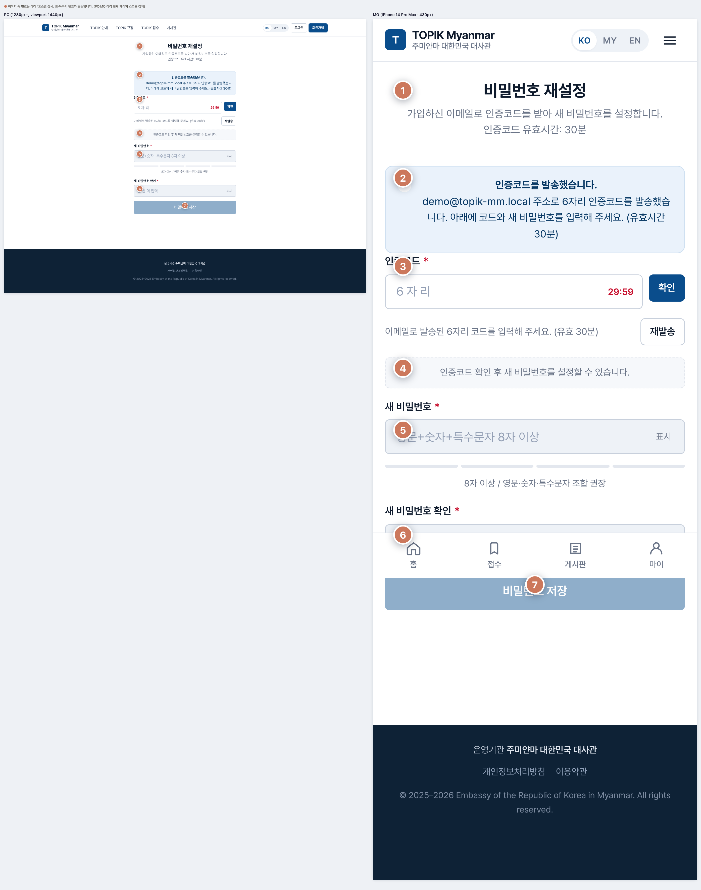
로그인 화면의 비밀번호 찾기에서 OTP를 받은 뒤 이 페이지(?email=…)로 진입합니다. 이메일 파라미터가 없으면 "잘못된 접근" 패널을 보여줍니다.
사용 흐름 (시나리오)
- (이미 발송된) OTP 6자리 입력 →
확인(verify-reset-code) →reset_token발급 + 새 비밀번호 입력칸 잠금 해제. - 새 비밀번호·확인 입력 →
비밀번호 저장(reset-password) → 성공 패널 →login.html?reset=ok.
입력 필드
| 필드 | 필수 | 형식·제약 |
|---|---|---|
인증코드 (#prCode) | ● | 6자리, 유효 30분(otpTimer 30:00) |
새 비밀번호 (#newPw1) | ● | 8자 이상 + 영문·숫자·특수문자 (인증 전 비활성) |
새 비밀번호 확인 (#newPw2) | ● | 위와 동일 값 |
요소별 상세
- 1) 인증코드 + 확인 (
btnVerify) — 성공 시 코드칸이 읽기 전용으로 잠기고 "인증 완료" 상태.재발송(btnResend)은 새 코드 발송 후 다시 인증 요구. - 2) 새 비밀번호 (
btnSave) — 인증 완료 전에는 입력·저장 버튼 비활성. 강도 막대 제공. - 3) 완료/에러 패널 — 성공 → 로그인 이동, 직접 접근(이메일 없음) → 에러 패널.
검증·에러
| 상황 | 메시지 |
|---|---|
| 코드 오류/만료 | "인증코드가 올바르지 않거나 만료되었습니다." |
| 토큰 무효 | "재설정 토큰이 유효하지 않습니다." |
| 비번 규칙 | "영문·숫자·특수문자를 각각 포함하여 8자 이상…" |
계정 · 내정보 수정 (`mypage-profile.html`)
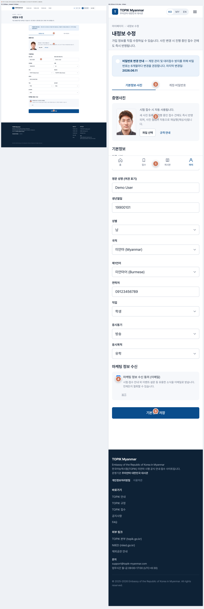
로그인 필수.
탭 2개: 기본정보·사진 / 계정·비밀번호. (Google 계정은 비밀번호 탭이 숨겨지고 안내 표시)
사용 흐름 (시나리오)
- 기본정보·사진 — 프로필 수정 후 기본정보 저장을 누르면 반영됩니다. 사진 교체 시 진행 중 접수 건에 즉시 반영되고 사진 심사가 자동 재실행됩니다.
- 계정·비밀번호 — 현재/새 비밀번호 입력 후 저장(
change-password) → 보안상 재로그인 유도. 하단 위험 구역에서 회원 탈퇴.
입력 필드 (기본정보)
| 필드 | 필수 | 형식·제약 |
|---|---|---|
| 한글/영문 성명 | ● | 영문은 여권 표기 |
| 생년월일 | ● | YYYYMMDD, 만 14세 이상 |
| 성별/국적/제1언어 | ● | 드롭다운 |
| 연락처 | ● | — |
| 직업/응시동기/응시목적 | ● | 연명부 코드 |
증명사진 (profilePhotoZone) | ○ | JPG/PNG ≤2MB, 교체 시 진행 중 접수 재심사 |
비밀번호 변경 필드
| 필드 | 필수 | 형식·제약 |
|---|---|---|
| 현재 비밀번호 | ● | 일치해야 함 |
| 새 비밀번호 / 확인 | ● | 8자 이상 + 영문·숫자·특수문자 |
요소별 상세
- 1) 프로필 폼 — 정보를 수정한 뒤 기본정보 저장을 누르면 반영됩니다. 저장되면 상단 메뉴의 이름도 함께 바뀝니다.
- 2) 사진 교체 —
photo-upload.js로 미리보기. 저장 시 새photo_file_id로 갱신되고 진행 중 접수의 사진 심사 상태가pending으로 재설정(자동 재심사). 사진만 실패 시 "기본정보는 저장됐지만 사진 업로드 실패" 안내. - 3) 비밀번호 변경 — 이메일로 가입한 계정만 변경할 수 있습니다(Google 가입은 Google에서 관리). 변경 후 보안을 위해 다시 로그인합니다.
- 4) 회원 탈퇴 (
#modalLeave) — 본인 확인 방식이 가입 유형에 따라 분기:- 이메일 계정: 비밀번호를 입력하고 탈퇴를 확인합니다.
- Google 계정: Google 본인 확인(GIS) →
google_id_token전송(발급 후 300초 내 유효). - 하이브리드(비번+Google 둘 다)면 둘 중 하나로 확인.
- 탈퇴 시 진행 중 접수 전부 취소, 상태
withdrawn, 동일 이메일 30일 재가입 제한.
- 5) Google 안내 (
pf-google-notice) — Google 가입 계정에 표시(비밀번호는 Google에서 관리). - 6) 마지막 변경일 (
pf-pw-changed) —password_changed_at표시(6개월마다 변경 권장 안내).
검증·에러
| 상황 | 메시지 |
|---|---|
| 현재 비번 불일치 | "현재 비밀번호가 올바르지 않습니다." |
| Google 비번 변경 시도 | "Google 계정은 비밀번호 변경을 사용할 수 없습니다." |
| 만 14세 미만 생일 | AGE_RESTRICTED (422) |
| Google 인증 만료 | "Google 인증이 만료되었습니다. 다시 시도해 주세요." |
약관 · 이용약관 (`terms.html`)
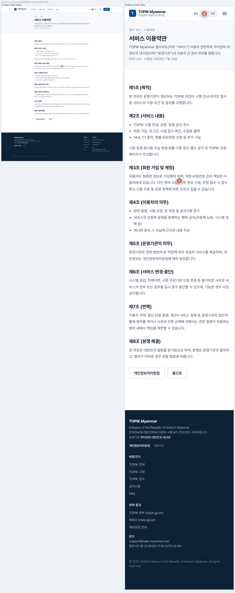
운영 기관이 게시한 이용약관 전문이 표시됩니다. 하단에 버전과 시행일이 함께 표시됩니다.
| 번호 | 요소 | 동작 |
|---|---|---|
| 1 | 약관 본문 | 약관 전문과 버전·시행일(#termsUpdated) 표기. |
| 2 | 언어 전환 | KO/MY/EN 변경 시 로 재조회. |
약관 · 개인정보처리방침 (`privacy.html`)
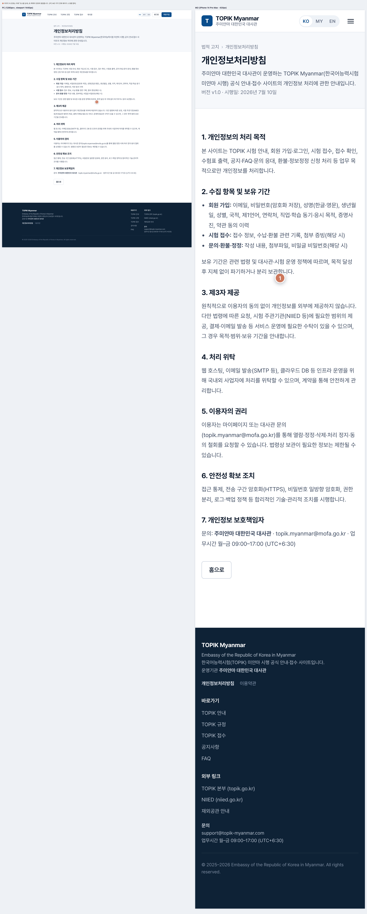
이용약관과 같은 방식으로 개인정보처리방침 전문이 표시됩니다. KO / MY / EN 언어 전환을 지원합니다.
| 번호 | 요소 | 동작 |
|---|---|---|
| 1 | 개인정보 본문 | 개인정보처리방침 전문이 표시됩니다. |
약관 · 마케팅 수신 (`marketing.html`)
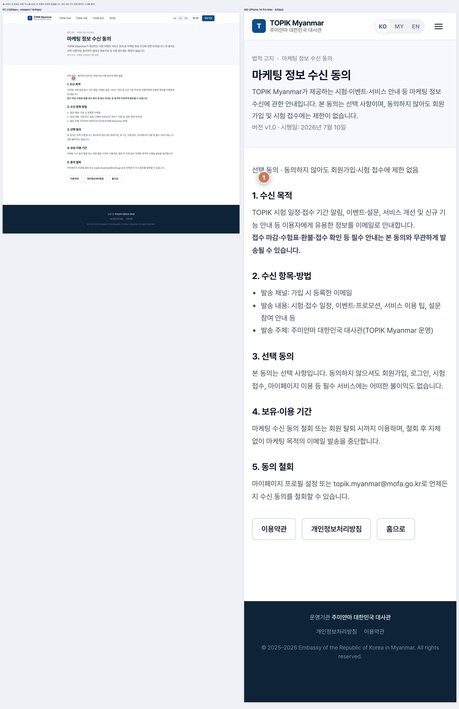
terms-page.js(data-term-type="marketing"). 가입 시 선택 동의 항목의 전문 안내.
| 번호 | 요소 | 동작 |
|---|---|---|
| 1 | 마케팅 약관 | 마케팅 정보 수신 동의 관련 약관 전문입니다. |
에러 · 404 (`404.html`)
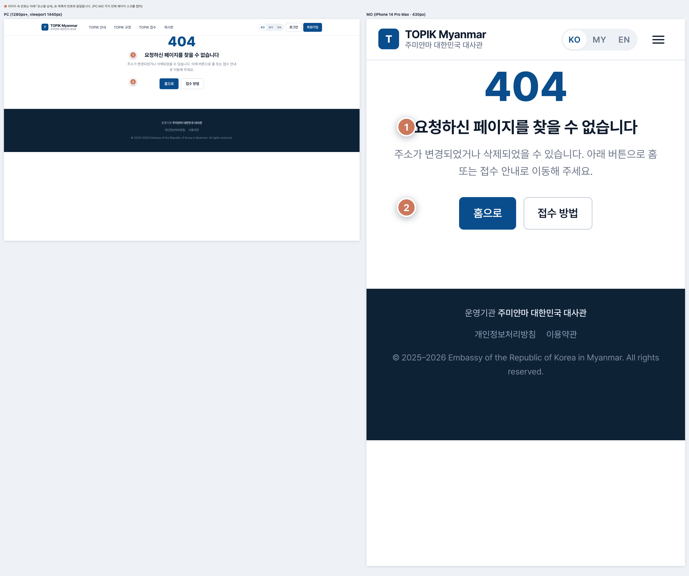
| 번호 | 요소 | 동작 |
|---|---|---|
| 1 | 안내 문구 | "요청하신 페이지를 찾을 수 없습니다" + 설명. |
| 2 | 이동 버튼 | 홈으로(index.html) · 접수 방법(apply-howto.html). |
- 헤더·푸터는 공통 레이아웃 사용.
robots: noindex.
✳운영진용 백오피스
신규 관리자가 이 가이드만으로 접수 심사부터 수험번호 부여·내보내기, 공지·약관 운영까지 수행할 수 있도록 15개 화면의 전체 설명을 담았습니다.
BO 사용 가이드 (백오피스)
대상: TOPIK Myanmar BO (html/C안/BO(admin)/project/) 로컬 URL: http://localhost:8081 (빌드:python build-bo.py→public-bo/) API: http://localhost:8000 ·TopikBoApi+bo-api-bridge.js작성 기준: 2026-06-10 · panels/*.jsx + admin.html +apps/api/app/routers/admin_api.py기반
이 문서는 신규 관리자가 이 문서만으로 전 업무(접수 심사→수납→승인→수험번호 부여→내보내기, 공지 다국어 등록, 약관 버전 관리)를 수행할 수 있도록 각 화면 요소를 1) 무엇인지 2) 관리자 행동 3) 결과·피드백 4) 검증·제약 5) 연동 API 6) 권한·조건부 노출 7) 에러·충돌 케이스로 나누어 설명합니다.
목차
- 관리자 로그인
- 관리자 셸
- 대시보드 (
#dashboard) - 접수자 목록 (
#applicants) - 회차 관리 (
#sessions) - 시험장 관리 (
#venues) - 공지사항 (
#notices) - FAQ (
#faq) - 환불·정보정정 (
#refunds) - 문의 게시판 (
#inquiries) - 회원 관리 (
#members) - 약관 관리 (
#terms) - 관리자 계정 (
#admins) - 관리자 권한 (
#permissions) - 처리 이력 (
#audit)
부록: 공통 운영 모델 — 역할·상태·동시 작업·내보내기
관리자 로그인 (`admin-login.html`)
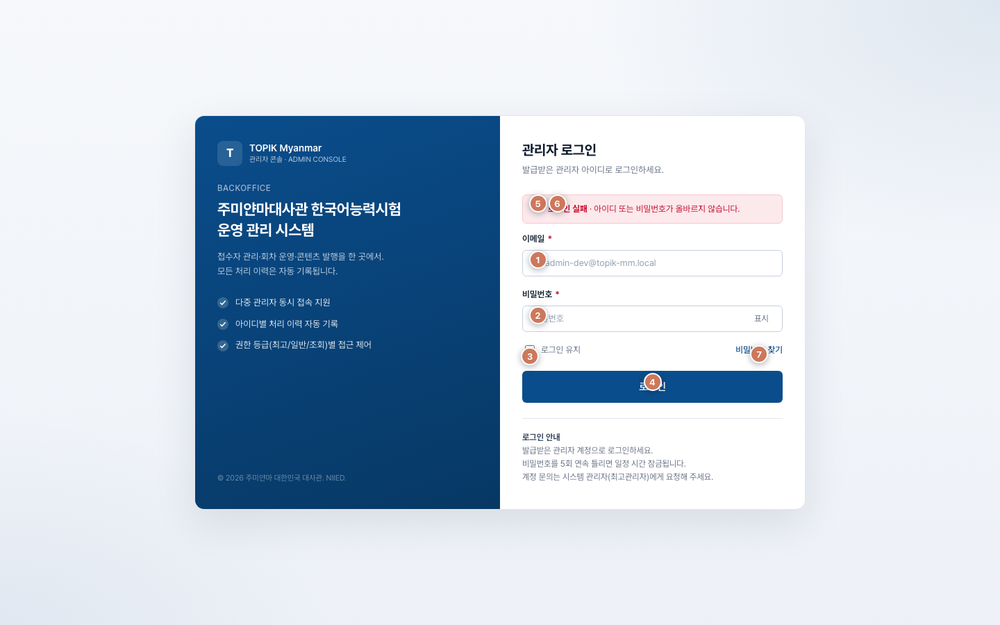
관리자 전용 로그인 화면입니다. 관리자 계정으로만 로그인할 수 있으며, 일반 회원 계정으로는 접속할 수 없습니다.
| 번호 | 요소 | 설명 |
|---|---|---|
| 1 | adminEmail | 관리자 이메일(로그인 ID). 빈 값이면 제출 시 「입력 누락」 배너. autocomplete="username". |
| 2 | adminPw / pwToggle | 비밀번호 입력 + 「표시/숨기기」 토글(type=password↔text). 빈 값이면 제출 차단. |
| 3 | remember | 「로그인 유지」 체크. 체크하면 브라우저를 닫아도 로그인 상태가 유지됩니다(최대 14일). 체크하지 않으면 탭을 닫으면 로그아웃됩니다. |
| 4 | 로그인 버튼 | 이메일·비밀번호 입력 후 로그인을 누르면 관리 화면으로 이동합니다. |
| 5 | 오류 안내 | 로그인 실패 시 원인별 메시지가 표시됩니다. 예: 이메일·비밀번호 불일치, 5회 실패 시 30분 잠금, 관리자 계정 아님, 서버 연결 실패. |
| 6 | okBanner | URL에 ?pw_changed=1이 있을 때 표시 — 「비밀번호 변경 완료 · 새 비밀번호로 다시 로그인」. (비밀번호 변경 게이트 통과 후 자동 이동) |
| 7 | 비밀번호 찾기 | 비밀번호를 잊은 경우 최고관리자에게 초기화를 요청하세요. |
이미 로그인된 상태에서 이 페이지에 들어오면 바로 관리 화면으로 이동합니다.
관리자 셸 (`admin.html`)
로그인 후 보이는 관리 화면입니다. 왼쪽 메뉴를 누르면 각 업무 화면으로 이동합니다. 로그인하지 않은 상태로 접속하면 로그인 화면으로 이동합니다.
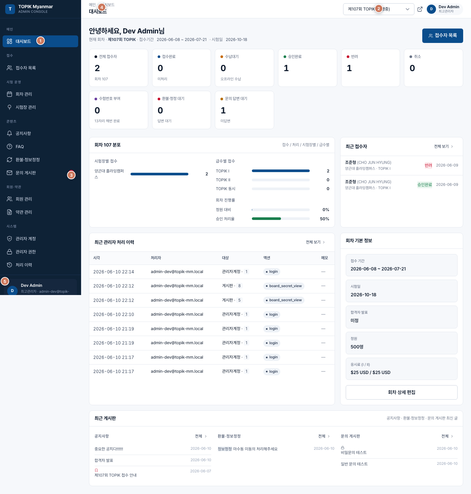
| 번호 | 요소 | 설명 |
|---|---|---|
| 1 | 왼쪽 메뉴 | 메인·접수·시험 운영·콘텐츠·회원·약관·시스템 그룹의 13개 메뉴. 클릭하면 해당 업무 화면으로 이동합니다. |
| 2 | 회차 선택 | 대시보드·접수자 목록 상단에서 작업할 회차를 선택합니다. 옵션에 상태 표기(진행중/예정/종료). 전 회차 데이터의 필터 기준. |
| 3 | 배지(알림 숫자) | 메뉴 옆 숫자는 처리 대기 건수입니다. 로그인·화면 이동·새로고침할 때 갱신됩니다. |
| 4 | 탑바(tb) | breadcrumb + 패널 제목 + 회차 드롭다운(2) + FO 사이트 새 창 링크(../../FO/index.html) + 우측 사용자(이름·역할). |
| 5 | 주소(북마크) | 화면 주소를 북마크하면 같은 화면으로 다시 들어올 수 있습니다. 접수자 목록은 검색·필터 조건도 주소에 저장됩니다. |
| 6 | 비밀번호 변경 안내 | 첫 로그인 등 비밀번호 변경이 필요하면, 다른 메뉴 사용 전 새 비밀번호를 설정해야 합니다(8자 이상·영문·숫자·특수문자·현재와 다름). 완료 후 다시 로그인합니다. |
| 7 | 사용자/로그아웃 | 이름·역할(최고/일반/조회)이 표시됩니다. 로그아웃을 누르면 확인 후 로그인 화면으로 이동합니다. |
데이터를 불러오는 동안 화면 상단에 진행 안내가 표시되고, 오류가 있으면 빨간 안내 띠가 나타납니다.
대시보드 (`#dashboard`)
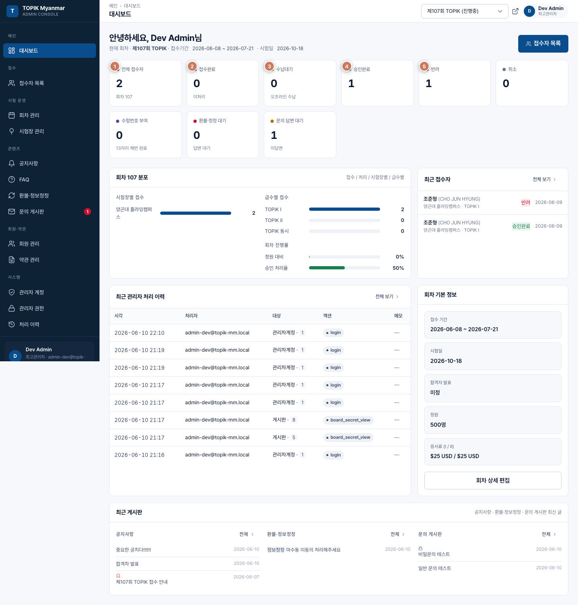
현재 회차 컨텍스트(상단 드롭다운)에 속한 접수자만 집계합니다. 회차를 바꾸면 모든 카드·차트가 즉시 재계산됩니다.
3-1. KPI 카드 (9종) — 산출 기준
| # | 카드 | 의미 / 산출 기준 (현재 회차) | |||
|---|---|---|---|---|---|
| 1 | 전체 접수자 | 현재 회차 접수 건수(취소 포함 전체). hint=회차 번호 | |||
| 2 | 접수완료 | UI 상태 applied(사진·수납 완료됐으나 승인 처리 전 미처리 건) | |||
| 3 | 수납대기 | UI 상태 pay(사진 승인 + 오프라인 수납 전) | |||
| 4 | 승인완료 | UI 상태 approved(승인 또는 수험번호 부여 완료) | |||
| 5 | 반려 | 일괄·반려 모달 | 접수 반려 | 사유 필수 | 응시자 안내 |
| 수험번호 부여 | 수험번호 일괄 부여 | 13자리 채번 | 최고관리자만 | 4-F 참고 |
접수자 목록 (`#applicants`)

4-C. 필터·검색·그리드 (요소)
| 번호 | 요소 | 무엇 / 행동 / 결과 · 검증 |
|---|---|---|
| 1 | 상태 칩 8종 | 전체/접수완료/사진심사중/수납대기/승인완료/반려/취소/환불자. 각 칩에 현재 회차 기준 건수 배지. 선택 시 그리드 필터 + URL ?s=. |
| 2 | venueF / levelF | 시험장(활성만)·급수(Ⅰ/Ⅱ/동시) 드롭다운. URL ?v=,?l=. |
| 3 | 검색창 | 한글·영문 성명/이메일/생년월일/수험번호 부분 일치(대소문자 무시). URL ?q=. |
| 4 | 조건 초기화 | 필터·검색이 하나라도 걸렸을 때만 노출. 클릭 시 전체 초기화. |
| 5 | applicants-grid | 체크박스 + 정렬 가능 컬럼(번호·한글성명·영문성명·이메일·접수일) + 사진 썸네일 + 사진심사 Pill + 수납 Pill + 수험번호 + 상태 Pill + 상세보기. 페이지당 12행. |
| 6 | 사진 썸네일 | 등록된 증명사진을 우선 표시, 없으면 미심사/반려/이니셜 박스로 대체. |
| 7 | 전체선택 체크박스 | 헤더 체크박스는 현재 페이지 행만 선택/해제. |
| 8 | 인쇄 | window.print() — .no-print 영역(사이드바·탑바·관리 컬럼 등) 숨김 인쇄용 CSS 적용. |
4-D. 일괄 처리 바 (BulkBar)
체크박스로 1건 이상 선택하면 하단 고정 바가 뜹니다. 계정 등급에 따라 사용할 수 없는 버튼은 비활성화됩니다.
| 버튼 | 조건/대상 | 결과 |
|---|---|---|
| 사진 일괄 승인 | photo 권한 · 선택 건 중 미승인만 처리 | 처리 건수 토스트, 이미 전부 승인이면 안내 |
| 오프라인 수납 | pay 권한 | 수납 모달(pay) 오픈 |
| 승인 | approve 권한 | 승인 모달 오픈 — 사진 미심사 포함 시 차단 |
| 반려 | reject 권한 | 반려 모달(사유 필수) 오픈 |
| 수납 취소(환불) | pay 권한 · 선택 중 수납완료 건만 | 수납 모달(cancel) 오픈 |
4-E. 인라인 사진 심사 · 상세 LP · 모달
| 번호 | 요소 | 무엇 / 행동 / 결과 |
|---|---|---|
| 1 | 사진 심사 | 사진 확대·회전(화면에서만)·원본 다운로드·승인/반려. 반려 사유 6종. 기타는 상세 입력 필수. |
| 2 | 상세 LP(ApplicantDetailLP) | 탭 3개 — 기본 정보(응시자/시험 정보 KV, 사진 심사 인라인 승인·반려), 메모(관리자 메모 누적, 로컬), 처리 이력(해당 접수 audit 타임라인). 푸터에 반려/수납·수납취소/승인 버튼(조회 전용·취소 건은 비활성). |
| 3 | 수납 모달(PayModal) | pay/cancel 모드. 선택 건 사진·기본정보 표 + 사진 미심사 행은 모달 내에서 즉시 사진 승인 가능. 합계 응시료 표시. pay: 영수증·메모(선택). cancel: 취소 사유(본인 요청/중복 접수/정보 오류/기타) 필수. |
| 4 | 승인 모달(ApproveModal) | 대상 건수·안내. 사진 미심사 포함 시 명단 표기 + 승인 버튼 비활성. |
| 5 | 반려 모달(RejectModal) | 일반 반려 사유(정보 불일치/중복 접수/기타) + 추가 안내. 기타 시 상세 필수. 사유는 응시자 이메일·마이페이지 안내. |
4-F. 수험번호 13자리 일괄 부여 (ExamAssignModal)
상단 「수험번호 일괄 부여」 → 미리보기 모달이 먼저 dry_run으로 채번 결과를 보여주고, 확정 시 실제 부여합니다.
- 13자리 구성:
국가(3)=025+지역(3)+수준(1: 7=Ⅰ / 8=Ⅱ)+시험장(2)+응시자(4)예:0250017010001(양곤 001 · Ⅰ급 7 · 시험장 01 · 0001번) - 대상 조건: 수납 완료(
paid) + 사진 승인(approved) + 비반려·비취소 + 수험번호 미부여 - 정렬:
(시험장, 수준)그룹 내 영문 성명 오름차순으로 4자리 일련번호 배정 - 편의지원(장애인) 신청자: 같은 그룹의 마지막 홀수 좌석부터 내림차순(…,7,5,3,1) 배정(좌석 분리 배려)
- 권한: 최고관리자(super)만 실행 가능 — 일반/조회는 버튼 비활성(
can('applicants','exam')) - 재부여 차단: 이미 부여되고 노출 시점이 지난 회차는 재배정 불가(409
ALREADY_VISIBLE) - 이메일 발송 안 함 · 노출은 아래 「노출 시점」 설정일에 FO 접수확인에서 공개
4-G. 노출 시점 설정 (ExamVisibilityCard)
그리드 아래 카드. 노출 시작일(date)+시각(time) 선택 후 노출 시점 저장을 누르면 설정이 저장됩니다. 이 일시 이전에는 FO 접수확인에서 수험번호 미노출. 현재 설정값을 카드에 표기.
4-H. 내보내기 (Excel / ZIP) — 포함 항목
| 버튼 | 모달/모드 | 포함 항목·구조 | 조건 | 연동 |
|---|---|---|---|---|
| 연명부 엑셀 | 현재 필터 / 회차 전체 | 「연명부 양식.xlsx」 10컬럼: 한글성명·영문성명·생년월일(8)·성별(1/2)·국적·제1언어·직업코드·응시동기코드·응시목적코드·수험번호(13). 지역·시험장·수준별 개별 파일(단일 시트), 파일명 TOPIK Ⅰ_미얀마_{지역}_{시험장}.xlsx, 행은 수험번호(영문명 정렬)순. 2개 이상이면 zip 묶음. | export 권한 | GET …/roster.xlsx |
| 사진 zip | — | {지역}/{시험장}/{수준}/{13자리 수험번호}.jpg 폴더 구조 + _누락리포트.txt(수험번호 미부여/사진 없음 목록). 취소 건 제외, 회차/시험장/급수 필터 적용. | export 권한 · API 연결 필수 |
4-I. 권한·조건부 노출 / 에러
- 조회 전용(viewer) 계정은 상단에 안내 배너 + 사진 심사·수납·승인·반려·수험번호·내보내기 버튼 전부 비활성.
- 일반관리자(general): 사진심사·수납·승인·반려는 가능하나 수험번호 부여·내보내기는 비활성(권장 매트릭스 기준).
- 409 충돌: 다른 관리자가 먼저 처리한 건은
bo-api-bridge.js handleMutation이 「다른 관리자가 먼저 수정했습니다. 최신 데이터로 새로고침합니다.」 토스트 후 자동 재조회 → 다시 시도. - 400 PHOTO_NOT_APPROVED: 사진 승인 전 수납 시도 → 먼저 사진 승인 필요.
- 취소(FO) 건: 사진 심사·수납·승인·반려 버튼이 잠깁니다.
회차 관리 (`#sessions`)
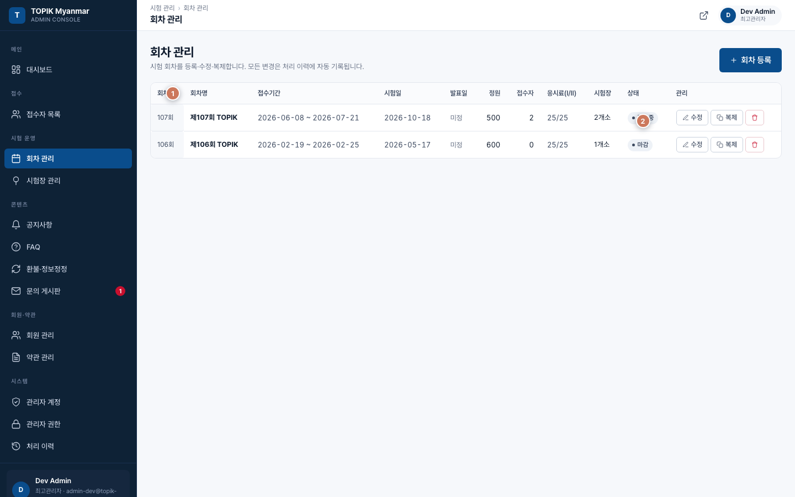
| 번호 | 요소 | 무엇 / 행동 / 결과 · 검증 · 권한 | |||
|---|---|---|---|---|---|
| 1 | 회차 목록 | 시험일 내림차순. 컬럼: 회차·회차명·접수기간·시험일·발표일(미정 시 「미정」)·정원·접수자·응시료(Ⅰ/Ⅱ)·시험장 수·상태·관리. 폐지 행은 흐리게. | |||
| 2 | 상태 Pill | 예정(planned)·접수중(open)·마감(closed)·폐지(revoked). 상태는 접수기간 기준 자동 산정 — 별도 수동 전환 버튼 없음(아래 5-A). | |||
| 3 | 회차 등록 / 수정 LP | 기본(회차번호·회차명·접수상태 안내·정원), 일정(접수시작·마감·시험일·합격발표일), 응시료(Ⅰ/Ⅱ USD), 시험장 다중 선택(활성만). | 4 | 복제 | 다음 회차 번호로 설정 복사(상태: 예정). 등록 권한 필요. |
| 5 | 폐지 | 확인 모달 → POST …/{id}/revoke. 접수자 정보는 유지, 회차 비공개 전환. (복원 API restore 존재) |
5-A. 등록·수정 검증 규칙 (SessionEditLP)
저장 버튼은 다음을 모두 만족해야 활성화됩니다.
- 회차명 필수, 접수시작·마감·시험일 필수
- 정원 ≥ 0 (0은 「미정」 의미), 응시료 Ⅰ·Ⅱ 각각 > 0
- 시험장 1개 이상 선택(활성 시험장만 선택 가능)
- 일정 순서: 접수시작 < 접수마감 < 시험일
- 합격발표일은 입력 시 시험일 이후여야 함(미정 시 비움)
- 접수기간은 저장 시 MMT 자정/말일로 변환 저장(시작 00:00, 마감 23:59 +06:30)
상태 자동 규칙: 접수 시작일 00:00(MMT) 이전=예정 · 기간 내=접수중 · 마감일 23:59(MMT) 이후=마감. 폐지는 목록에서 별도 처리.
시험장 관리 (`#venues`)
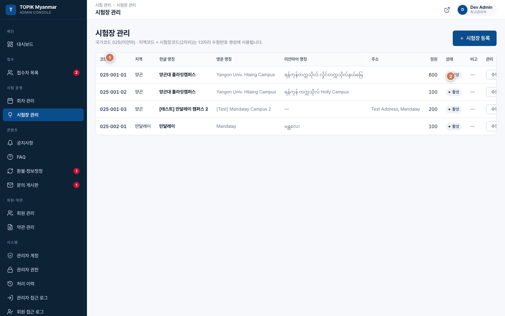
| 번호 | 요소 | 무엇 / 행동 / 결과 · 검증 |
|---|---|---|
| 1 | 시험장 그리드 | 지역코드·코드 순 정렬. 컬럼: 코드(025·{지역}·{시험장})·지역·한글/영문/미얀마어 명칭·주소·정원·상태·비고·관리. 코드는 13자리 수험번호 생성에 사용 → 변경 신중. |
| 2 | 활성/비활성 토글 | 행의 「활성/비활성」 버튼. 비활성 시험장은 회차·필터 선택에서 제외. |
| 3 | 등록/수정 LP | 국가(미얀마 025 고정)·지역(드롭다운)·시험장 코드(2자리 01~99, 동일 지역 내 unique, 00 불가)·정원(>0)·한글/영문(필수)·미얀마어 명칭·주소·상태·비고. |
| 4 | 미얀마어 「적용」 | 한글 명칭 기준 미얀마어 번역 채움. 필요 시 직접 수정. |
| 5 | 비고(memo) | 좌석배치도·시험장 책임자·연락처 등 운영 정보는 별도 입력란 없이 이 비고란에 자유 기재(고객사 수정 0526). |
검증: 코드 ^[0-9]{2}$ 且 00 아님, 한글·영문 명칭, 정원 > 0. 신규 등록 시 동일 지역 내 코드 중복은 거부(토스트). 이미 수험번호가 부여된 시험장 코드는 변경하지 마세요.
공지사항 (`#notices`)
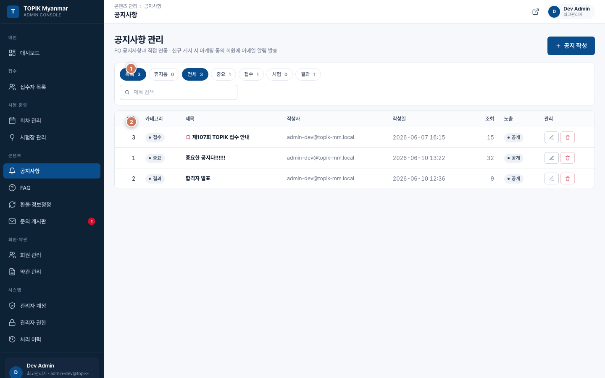
| 번호 | 요소 | 무엇 / 행동 / 결과 · 검증 | |||
|---|---|---|---|---|---|
| 1 | 목록/휴지통 탭 + 카테고리 칩 | 「목록」/「휴지통」 전환 + 카테고리(중요/접수/시험/결과) 필터 + 제목 검색. 목록은 고정(pin) 우선, 작성일 내림차순. 휴지통 탭은 진입 시 ?trash=true로 별도 조회하며 삭제일 컬럼 노출. | |||
| 2 | 공지 작성 / 수정 LP | Quill 리치 에디터 + 첨부 + 다국어. | 3 | 다국어(KO/MY/EN) 탭 | 언어 세그먼트로 제목·본문 각각 입력. KO 필수, MY/EN 선택. 저장 시 title_my/title_en/body_my/body_en로 전송 → FO에서 언어별 노출. 제목 최대 80자. |
| 4 | 노출 시작/종료(datetime-local) | display_start_at/display_end_at 저장(MMT→서버 ISO). 종료는 시작 이후여야 하며, 입력 단계와 저장 직전 모두 검증(아니면 토스트로 거부). | |||
| 5 | 옵션(공개/상단 고정) | 공개 체크 해제 시 비공개(초안) 저장. 상단 고정 시 목록·FO 상단 노출. | |||
| 6 | 첨부파일 | 최대 5개·파일당 10MB. 이미지(jpg/png/gif/webp 등)·문서(pdf/doc/docx/xls/xlsx/ppt/pptx/hwp/txt/zip/csv). 업로드 후 file_id 머지. 본문 인라인 이미지의 file_id도 자동 첨부에 합산. 업로드 진행 중에는 저장 차단. | |||
| 7 | 마케팅 발송 | 신규 공개 공지 등록 시 마케팅 수신 동의 활성 회원에게 알림 이메일 일괄 발송(POST …/{id}/send-marketing). 제목 + FO 공지 링크만 발송(본문 전체 미발송), 수정·삭제 시 미발송. 발송 인원은 결과 토스트로 표기. | |||
| 8 | 삭제(휴지통)/복원 | 삭제는 soft-delete → 휴지통 30일 보관 후 영구 삭제. 휴지통에서 「복구」(POST …/{id}/restore) — 복구 후 공개 여부 재설정 권장. |
권한: create/edit/delete는 can('notices', …). 조회 전용은 안내 배너 + 버튼 비활성.
FAQ (`#faq`)
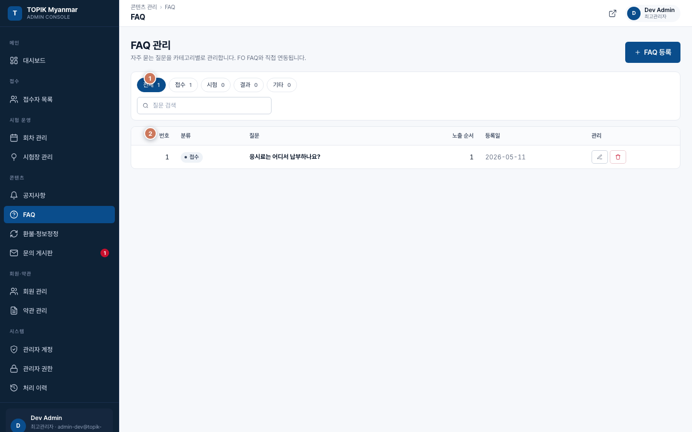
| 번호 | 요소 | 무엇 / 행동 / 결과 · 검증 | |||
|---|---|---|---|---|---|
| 1 | 카테고리 칩 + 검색 | 접수/시험/결과/기타 필터 + 질문 검색. 목록은 카테고리→노출 순서로 정렬. | |||
| 2 | 등록/수정 LP | 분류·노출 순서(작을수록 상단)·다국어 질문/답변. | 3 | KO/MY/EN 편집 | 언어 세그먼트로 질문(최대 120자)·답변(최대 3000자) 입력. KO 필수, MY/EN 선택. FO FAQ와 직접 연동. |
| 4 | 삭제 | 확인 모달 → PATCH {is_active:false}(soft delete) → 목록에서 제거. |
권한: create/edit/delete 권한 기반 버튼 활성. 권장 매트릭스상 일반관리자도 FAQ 전체 CRUD 가능.
환불·정보정정 (`#refunds`)
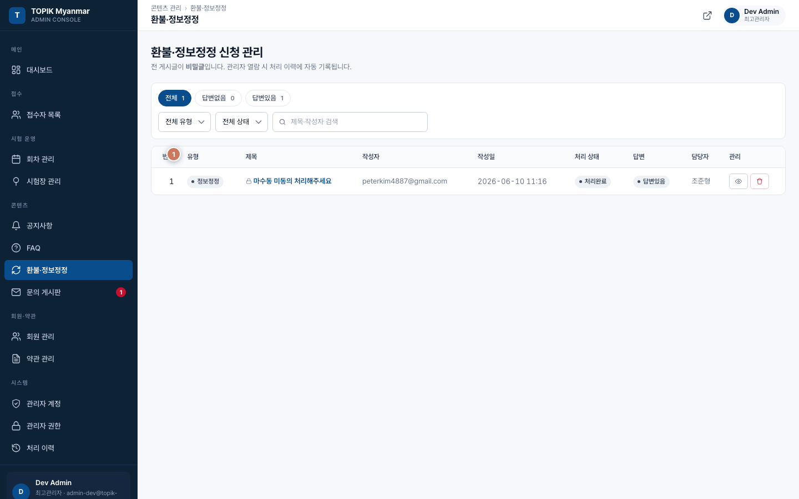
전 게시글이 비밀글입니다. 관리자가 상세를 열면 서버가 비밀글 열람 이력(audit)을 자동 기록합니다.
| 번호 | 요소 | 무엇 / 행동 / 결과 · 검증 |
|---|---|---|
| 1 | 답변 유무 칩 + 유형/상태/검색 | 칩: 전체/답변없음/답변있음. 드롭다운: 유형(환불/정보정정)·상태(접수/검토중/처리완료/반려)·제목·작성자 검색. 작성일 내림차순. |
| 2 | 목록 그리드 | 번호·유형 Pill·제목(자물쇠)·작성자·작성일·처리상태 Pill·답변 유무·담당자·관리(상세/삭제). |
| 3 | 상세 LP(RefundDetailLP) | 신청 내용(유형·본문·첨부) + 처리(상태·담당자) + 답변 이력(누적) + 답변 작성 + 댓글/대댓글. 상세 진입 시 GET …/{id}로 admin_replies 전체를 재조회. |
| 4 | 처리 상태 + 답변 등록 | 상태 드롭다운 변경 후 답변 작성 → 「답변 등록·상태 저장」. 상태가 바뀌었으면 PATCH …/workflow 후 POST …/reply. 답변 필수. 매 등록마다 이력에 추가(이전 답변 덮어쓰지 않음). FO·BO 모두 전체 이력 표시. 토스트 「FO 게시판에 노출」. |
| 5 | 환불 금액·방법 | 유형이 환불일 때만 노출(환불 금액 입력·방법: 계좌이체/현장환불/기타). 처리 메모 용도. |
| 6 | 회원 정보 수정 바로가기 | 정보정정 유형일 때 회원 관리에서 정보 정정 →로 회원 관리 화면 이동 후 직접 수정. |
| 7 | 답변 이력 / 댓글·대댓글 | 답변 이력(답변 이력 (N)): 등록순 목록. 각 항목 = 담당 관리자명 · 「공식 답변」 라벨 · 등록 시각 · 본문. 여러 관리자·여러 차례 답변도 전부 유지. 댓글·대댓글(board-comments.jsx)은 공식 답변과 별도 스레드 — 비밀글이므로 자동 비공개. |
9-A. 처리 상태 전이 (workflow)
| UI 상태 | API workflow | 비고 |
|---|---|---|
| 접수 | received | 신규 신청 기본값 |
| 검토중 | in_review | 처리 진행 중 |
| 처리완료 | completed | 환불·정정 완료 |
| 반려 | rejected | 신청 반려 |
문의 게시판 (`#inquiries`)
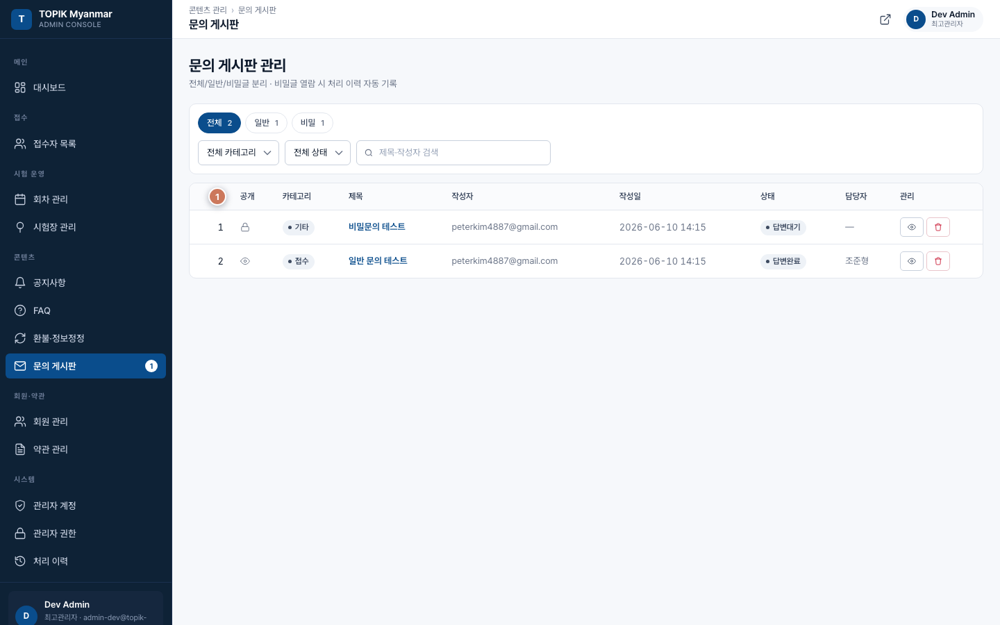
| 번호 | 요소 | 무엇 / 행동 / 결과 · 검증 |
|---|---|---|
| 1 | 공개 탭 + 카테고리/상태/검색 | 탭: 전체/일반/비밀. 드롭다운: 카테고리(접수/시험/기타)·상태(답변대기/답변완료)·검색. 비밀글은 자물쇠 아이콘. |
| 2 | 상세 LP(InquiryDetailLP) | 문의 내용 + 답변 이력(누적) + 답변 작성 + 댓글/대댓글. 상세 진입 시 GET …/{id}로 admin_replies 전체 재조회. 비밀글 열람 시 audit 자동 기록(서버). |
| 3 | 답변 등록·완료 처리 | 「답변 작성」 textarea 입력 후 「답변 등록·완료 처리」 → POST …/reply {mark_complete:true}. 매 등록마다 답변 이력에 추가(담당자·시각·「공식 답변」 라벨, 덮어쓰기 없음). 추가 답변 가능. mark_complete:true 시 상태 답변완료(answered) 전환 — 이후에도 이력에 답변 추가 가능. |
| 4 | 댓글 공개 여부 | 일반글은 댓글 작성 시 「공개」 체크로 공개/비공개 선택. 비밀글은 자동 비공개. POST …/comments {content, parent_id?, is_public}. 대댓글은 부모 아래 들여쓰기. |
| 5 | 삭제 | 확인 모달 → DELETE …/{id}. delete 권한 필요. |
10-A. 상태 전이 (workflow)
| UI 상태 | API workflow | 트리거 |
|---|---|---|
| 답변대기 | awaiting_reply | 신규 문의 |
| 답변완료 | answered | 답변 등록(자동) 또는 상태 직접 변경 |
회원 관리 (`#members`)
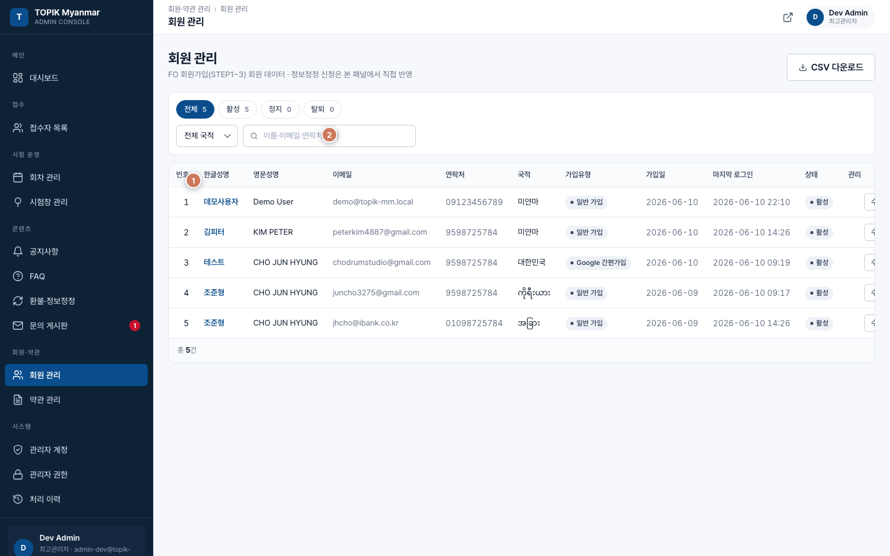
| 번호 | 요소 | 무엇 / 행동 / 결과 · 검증 |
|---|---|---|
| 1 | 상태 칩 + 국적/검색 | 전체/활성/정지/탈퇴 + 국적 드롭다운 + 이름·이메일·연락처 검색. 가입일 내림차순, 페이지당 12행. |
| 2 | 목록 그리드 | 번호·한글/영문성명·이메일·연락처·국적·가입유형(일반/Google)·가입일·마지막 로그인·상태·관리(상세/수정/PW/정지·해제/탈퇴). |
| 3 | 상세 LP(MemberDetailLP) | 프로필 + 접수 이력(이메일 매칭, 회차·급수·시험장·상태·수험번호) + 관리자 처리 이력 타임라인. |
| 4 | 정보 수정 | 성명·연락처·국적·마케팅 수신 수정. 이메일 변경 불가. 수정 사유 필수. |
| 5 | 정지(SuspendModal) | 활성 회원 대상. 사유(약관 위반/부정 행위/장기 미접속/보안 위협/기타) 필수 → PATCH {status:suspended}. 활성 세션 즉시 무효화 안내. 정지 회원은 「해제」로 활성 복귀. |
| 6 | 탈퇴(WithdrawModal) | 진행 중 접수(취소·반려 제외)가 자동 취소됨을 명단으로 경고 후 처리 → PATCH {status:withdrawn}. 사유 필수. |
| 7 | 비밀번호 초기화(PwResetLP) | 임시 비밀번호 발급(POST …/reset-password) → 1회 노출 + 이메일 발송, 첫 로그인 시 변경 강제. Google 간편가입 회원은 비활성(안내: Google 로그인 사용). |
| 8 | CSV 다운로드 | 현재 필터 회원을 CSV로. 컬럼: 번호·한글성명·영문성명·이메일·연락처·국적·가입유형·가입일·마지막 로그인·상태·마케팅수신. |
11-A. 회원 상태 전이
| 전이 | 트리거 | 결과 |
|---|---|---|
| 활성 → 정지 | 정지(사유 필수) | 로그인 차단·세션 무효화. 해제 가능 |
| 정지 → 활성 | 해제 | 즉시 활성 |
| 활성/정지 → 탈퇴 | 탈퇴(사유 필수) | 진행 중 접수 자동 취소, 복구 불가 |
약관 관리 (`#terms`)
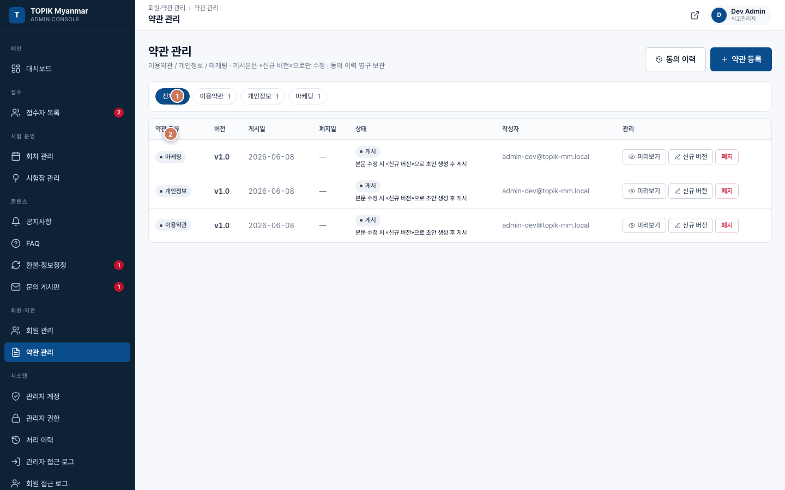
| 번호 | 요소 | 무엇 / 행동 / 결과 · 검증 · 권한 |
|---|---|---|
| 1 | 종류 칩 + 버전 목록 | 이용약관/개인정보/마케팅. 컬럼: 종류·버전·게시일·폐지일·상태(초안/게시/폐지)·작성자·관리. 게시일 내림차순. |
| 2 | 약관 등록(신규 초안) | 종류·버전(시맨틱, 예 v2.0)·게시 예정일·본문(KO 필수, MY/EN 선택 Quill). 저장 시 상태=초안. |
| 3 | 초안 수정 | 상태가 초안일 때만 본문·버전 수정 가능.(게시본 수정은 400 거부). |
| 4 | 게시 | 초안의 「게시」 → 확인 모달 → POST …/{id}/publish. 동종 기존 게시 버전은 자동 폐지. 최고관리자만. |
| 5 | 신규 버전(게시본 기반) | 게시 중 약관은 직접 수정 불가 → 「신규 버전」으로 현재 게시본 복사 + 버전 자동 bump(v1.0→v1.1) 한 초안 생성 → 저장 후 「게시」로 교체. |
| 6 | 폐지 | 게시 중 약관 「폐지」 → POST …/{id}/retire(게시 상태만 가능). 버전·동의 이력 보존, FO 노출 중단. 최고관리자만. |
| 7 | 미리보기 | FO 표시 형태로 본문 렌더(dangerouslySetInnerHTML). |
| 8 | 동의 이력(ConsentLogLP) | 진입 시 동의 이력을 조회합니다. 회원·약관 종류 필터 + CSV 내보내기(시각·회원ID·약관·버전·IP·방식). 감사 자료(영구 보관). |
12-A. 약관 상태 전이
| 전이 | 트리거 | 결과 |
|---|---|---|
| (없음) → 초안 | 등록/신규 버전 | draft |
| 초안 → 게시 | 게시(super) | published, 동종 기존 게시본 자동 폐지 |
| 게시 → 폐지 | 폐지(super) | retired, FO 노출 중단 |
관리자 계정 (`#admins`)
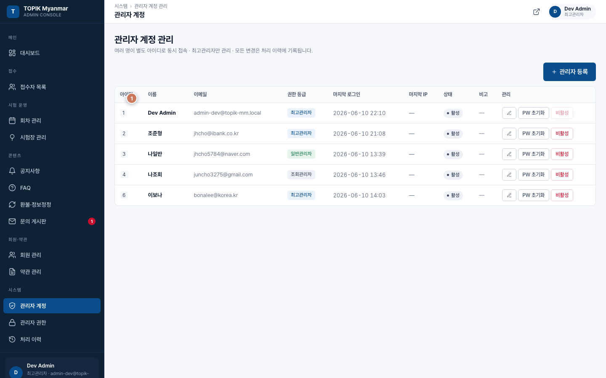
| 번호 | 요소 | 무엇 / 행동 / 결과 · 검증 · 권한 |
|---|---|---|
| 1 | 권한 안내 배너 | super가 아니면 「최고관리자만 관리 가능 · 조회 전용」 배너 + 모든 관리 버튼 비활성. |
| 2 | 관리자 목록 | 아이디·이름·이메일·권한 등급(최고/일반/조회)·마지막 로그인·마지막 IP·상태·비고. |
| 3 | 관리자 등록(AdminEditLP) | 이름·이메일·권한 등급·초기 비밀번호(8자+영문·숫자·특수문자)·비고. API 모드는 이메일이 계정 식별자. 첫 로그인 시 비밀번호 변경 강제. |
| 4 | 수정 | 이름·이메일·권한·상태 수정. |
| 5 | PW 초기화 | 확인 모달 → POST …/{id}/reset-password → 임시 비밀번호 발급(토스트 5초 노출) + 이메일, 첫 로그인 변경 강제. |
| 6 | 비활성/활성 | 상태 토글(사유 입력). 본인 계정은 비활성화 불가(가드). 비활성 시 활성 세션 즉시 무효화. |
역할 매핑: UI(최고/일반/조회) ↔ API(super/admin/readonly). 권한 검증은 서버 RBAC가 최종.
관리자 권한 (`#permissions`)
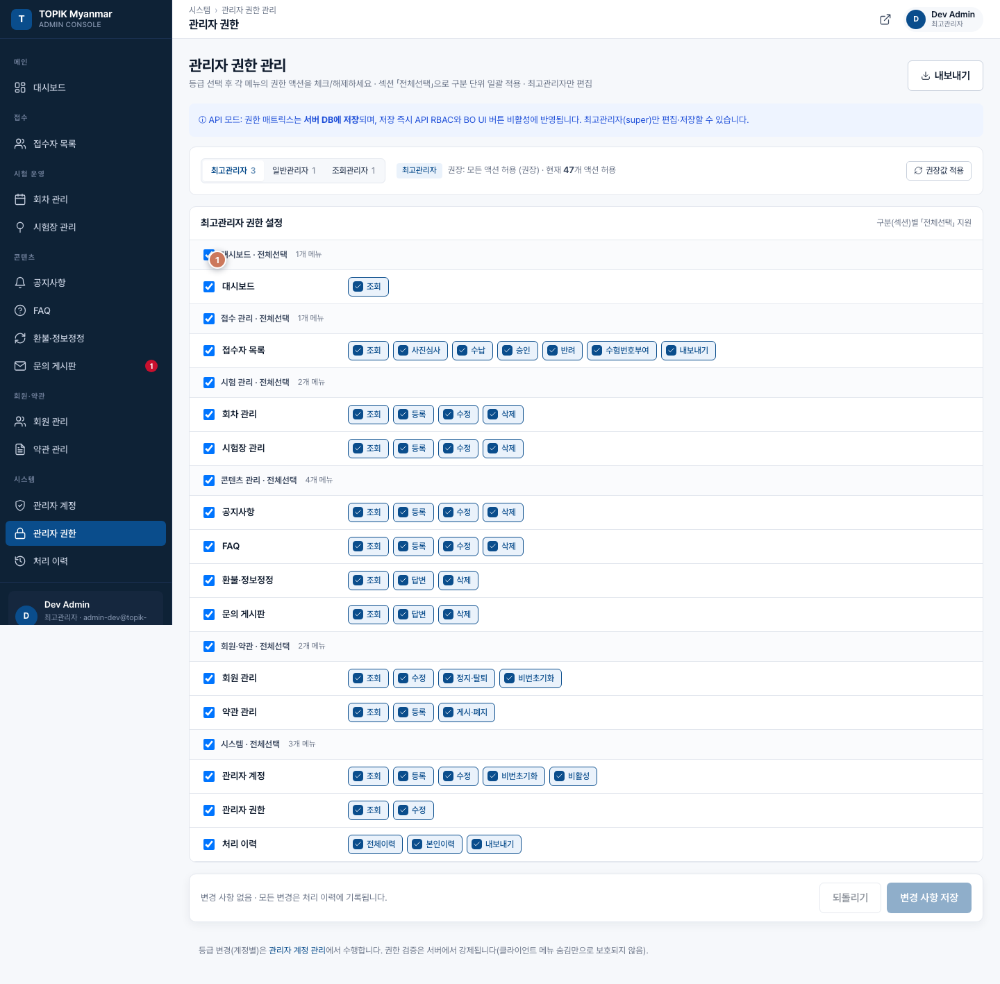
안내: 각 역할별 권한을 표로 확인하는 참고 화면입니다. 실제 권한은 계정 등급(최고/일반/조회)에 따라 적용됩니다.
| 번호 | 요소 | 무엇 / 행동 / 결과 |
|---|---|---|
| 1 | 권한 안내 | 실제 버튼 사용 가능 여부는 계정 등급에 따라 달라집니다. |
| 2 | 등급 선택 + 권장값 적용 | 최고/일반/조회 세그먼트(각 활성 계정 수 표기) + 「권장값 적용」(역할별 recommendedPerms 로드). |
| 3 | 편집 매트릭스 | 섹션(구분)별 「전체선택」 + 메뉴별 tri-check + 액션 칩(조회/등록/수정/삭제/사진심사/수납/승인/반려/수험번호부여/답변/게시·폐지/정지·탈퇴/비번초기화/비활성/내보내기/전체이력/본인이력). |
| 4 | 저장 / 되돌리기 | 최고관리자만 편집 가능. 참고용 저장입니다. |
| 5 | 내보내기 | 매트릭스를 CSV로(구분·메뉴·액션·역할별 O/X). |
14-A. 역할별 권한 요약
| 메뉴 | 최고(super) | 일반(general) | 조회(viewer) |
|---|---|---|---|
| 접수자 | 전체(사진·수납·승인·반려·수험번호·내보내기) | 사진·수납·승인·반려 (수험번호·내보내기 제외) | 조회 |
| 회차·시험장 | 전체 | 조회 | 조회 |
| 공지·FAQ | 전체 | 등록·수정·삭제 | 조회 |
| 환불·문의 | 전체 | 조회·답변·삭제 | 조회 |
| 회원·약관 | 전체 | 조회 | 조회 |
| 관리자 계정·권한 | 전체 | 없음 | 없음 |
| 처리 이력 | 전체 이력 | 본인 이력 | 본인 이력 |
처리 이력 (`#audit`)
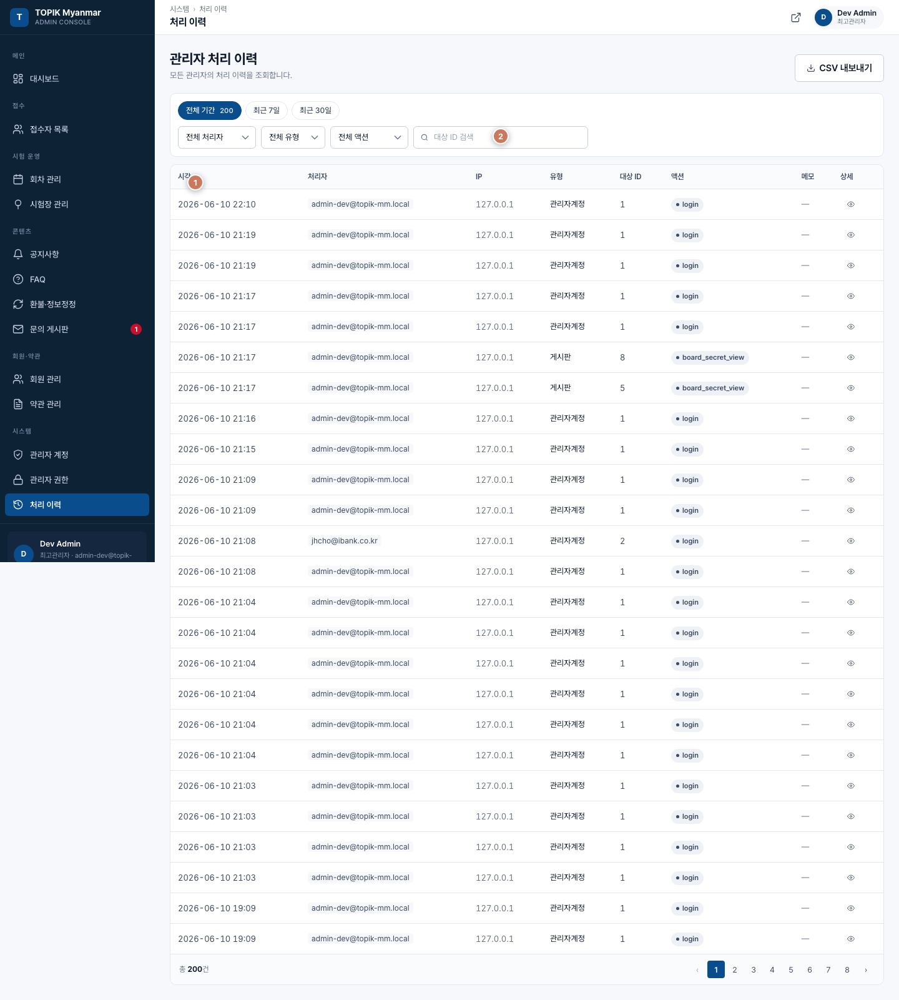
| 번호 | 요소 | 설명 |
|---|---|---|
| 1 | 기간 칩 + 필터 | 전체/최근 7일/30일 + 처리자·유형·액션 드롭다운 + 대상 ID 검색. 페이지당 25행. |
| 2 | 이력 테이블 | 시각·처리자·IP·유형·대상 ID·액션 Pill·메모·상세. 일반/조회 관리자는 본인 처리 이력만(처리자 드롭다운 비활성), 최고관리자는 전체. |
| 3 | 상세 보기 | 처리 시각·담당자·변경 내용(변경 전/후)과 관련 화면으로 바로 이동하는 링크를 확인할 수 있습니다. |
| 4 | CSV 내보내기 | 최고관리자만. 현재 필터 결과를 CSV로(시각·처리자·IP·유형·대상ID·액션·메모). |
기록 안내: 처리 이력은 수정·삭제할 수 없으며, 최소 3년간 보관하는 것을 권장합니다. 비밀글 열람·접수 처리·약관 게시 등 주요 행위가 자동 기록됩니다.
부록: 공통 운영 모델
A. 역할(Role) — 3등급
| 등급 | 시스템 역할 | 주요 권한 |
|---|---|---|
| 최고관리자 | super | 전 기능 + 수험번호 부여 + 관리자 계정/권한 + 약관 게시·폐지 + 전체 이력·내보내기 |
| 일반관리자 | admin | 접수 처리(사진·수납·승인·반려) + 콘텐츠(공지·FAQ·환불·문의) + 본인 이력 |
| 조회관리자 | readonly | 전 패널 조회 전용(변경 버튼 비활성) |
B. 동시 작업 시 안내
여러 관리자가 같은 접수 건을 동시에 처리할 수 있습니다. 다른 관리자가 먼저 처리한 경우 「다른 관리자가 먼저 수정했습니다. 최신 데이터로 새로고침합니다.」 안내가 표시되고 화면이 갱신됩니다. 최신 상태를 확인한 뒤 다시 작업하세요.
C. 이메일 알림
승인·반려·사진 반려·마케팅 공지 등 주요 처리 시 응시자·회원에게 이메일 안내가 발송됩니다.
D. 내보내기 요약
| 내보내기 | 위치 | 형식/컬럼 |
|---|---|---|
| 연명부 엑셀 | 접수자 | 10컬럼, 지역·시험장·수준별 단일 시트 파일 |
| 사진 zip | 접수자 | {지역}/{시험장}/{수준}/{수험번호}.jpg + 누락 리포트 |
| 회원 CSV | 회원 | 11컬럼(가입유형·마케팅 포함) |
| 동의 이력 CSV | 약관>동의 이력 | 시각·회원·약관·버전·IP·방식 |
| 처리 이력 CSV | 처리 이력(super) | 시각·처리자·IP·유형·대상·액션·메모 |
| 권한 매트릭스 CSV | 권한 | 구분·메뉴·액션·역할별 O/X |